Description
This shows the output of ANOVA-related functions from the package rwf. The functions cover non-parametric alternatives (Kruskal-Wallis), one-way and factorial ANOVA, MANOVA, effect size estimation, and post hoc comparisons. Each section shows rwf output alongside equivalent results from established packages so you can verify the numbers.
Installation instructions for rwf can be found here
The code can be found here
Formula
The built-in mtcars dataset is used throughout the
non-parametric and one-way sections. The formula qsec ~ cyl
models quarter-mile time (qsec) as a function of number of
cylinders (cyl), treating cylinders as a grouping
factor.
mtcars## mpg cyl disp hp drat wt qsec vs am gear carb
## Mazda RX4 21.0 6 160.0 110 3.90 2.620 16.46 0 1 4 4
## Mazda RX4 Wag 21.0 6 160.0 110 3.90 2.875 17.02 0 1 4 4
## Datsun 710 22.8 4 108.0 93 3.85 2.320 18.61 1 1 4 1
## Hornet 4 Drive 21.4 6 258.0 110 3.08 3.215 19.44 1 0 3 1
## Hornet Sportabout 18.7 8 360.0 175 3.15 3.440 17.02 0 0 3 2
## Valiant 18.1 6 225.0 105 2.76 3.460 20.22 1 0 3 1
## Duster 360 14.3 8 360.0 245 3.21 3.570 15.84 0 0 3 4
## Merc 240D 24.4 4 146.7 62 3.69 3.190 20.00 1 0 4 2
## Merc 230 22.8 4 140.8 95 3.92 3.150 22.90 1 0 4 2
## Merc 280 19.2 6 167.6 123 3.92 3.440 18.30 1 0 4 4
## Merc 280C 17.8 6 167.6 123 3.92 3.440 18.90 1 0 4 4
## Merc 450SE 16.4 8 275.8 180 3.07 4.070 17.40 0 0 3 3
## Merc 450SL 17.3 8 275.8 180 3.07 3.730 17.60 0 0 3 3
## Merc 450SLC 15.2 8 275.8 180 3.07 3.780 18.00 0 0 3 3
## Cadillac Fleetwood 10.4 8 472.0 205 2.93 5.250 17.98 0 0 3 4
## Lincoln Continental 10.4 8 460.0 215 3.00 5.424 17.82 0 0 3 4
## Chrysler Imperial 14.7 8 440.0 230 3.23 5.345 17.42 0 0 3 4
## Fiat 128 32.4 4 78.7 66 4.08 2.200 19.47 1 1 4 1
## Honda Civic 30.4 4 75.7 52 4.93 1.615 18.52 1 1 4 2
## Toyota Corolla 33.9 4 71.1 65 4.22 1.835 19.90 1 1 4 1
## Toyota Corona 21.5 4 120.1 97 3.70 2.465 20.01 1 0 3 1
## Dodge Challenger 15.5 8 318.0 150 2.76 3.520 16.87 0 0 3 2
## AMC Javelin 15.2 8 304.0 150 3.15 3.435 17.30 0 0 3 2
## Camaro Z28 13.3 8 350.0 245 3.73 3.840 15.41 0 0 3 4
## Pontiac Firebird 19.2 8 400.0 175 3.08 3.845 17.05 0 0 3 2
## Fiat X1-9 27.3 4 79.0 66 4.08 1.935 18.90 1 1 4 1
## Porsche 914-2 26.0 4 120.3 91 4.43 2.140 16.70 0 1 5 2
## Lotus Europa 30.4 4 95.1 113 3.77 1.513 16.90 1 1 5 2
## Ford Pantera L 15.8 8 351.0 264 4.22 3.170 14.50 0 1 5 4
## Ferrari Dino 19.7 6 145.0 175 3.62 2.770 15.50 0 1 5 6
## Maserati Bora 15.0 8 301.0 335 3.54 3.570 14.60 0 1 5 8
## Volvo 142E 21.4 4 121.0 109 4.11 2.780 18.60 1 1 4 2
form<-formula(qsec~cyl)Kruskal-Wallis Test
The Kruskal-Wallis test is the non-parametric equivalent of a one-way ANOVA. It tests whether the distributions of two or more independent groups differ, without assuming normality. Use it when your data violate the normality assumption or when you have ordinal outcomes.
The effect size reported here is epsilon-squared (ε²), the rank-based analogue of eta-squared. Values close to 0 indicate no effect; values close to 1 indicate a strong effect.
compute_kruskal_wallis_test is verified against
stats::kruskal.test (test statistic and p-value),
rcompanion::epsilonSquared (effect size with confidence
intervals), and rstatix::kruskal_effsize (effect size via
bootstrap CI). All four should produce equivalent results.
stats::kruskal.test(formula=form,data=mtcars)##
## Kruskal-Wallis rank sum test
##
## data: qsec by cyl
## Kruskal-Wallis chi-squared = 10.155, df = 2, p-value = 0.006235
rcompanion::epsilonSquared(x=mtcars$qsec,g=mtcars$cyl,group="row",ci=TRUE,conf=0.95,type="perc",R=1000,digits=3)## epsilon.squared lower.ci upper.ci
## 1 0.328 0.105 0.653
rstatix::kruskal_effsize(mtcars,form,ci=TRUE,conf.level=0.95,ci.type="perc",nboot=100)## # A tibble: 1 × 7
## .y. n effsize conf.low conf.high method magnitude
## * <chr> <int> <dbl> <dbl> <dbl> <chr> <ord>
## 1 qsec 32 0.281 0.03 0.65 eta2[H] large
compute_kruskal_wallis_test(formula=form,df=mtcars)## formula method etasq epsilonsq H df p
## 1 qsec ~ cyl Kruskal-Wallis rank sum test 0.2812123 0.3275857 10.15516 2 0.006234986One-Way ANOVA
compute_one_way_test runs a one-way ANOVA and returns
the full table including Sum of Squares (SS),
Mean Squares (MS), effect size (η²),
and observed power. It supports both equal-variance
(var.equal = TRUE, classic Fisher ANOVA) and
unequal-variance (var.equal = FALSE, Welch ANOVA)
versions.
Results are verified against oneway.test (F and p),
car::Anova (type II SS), lsr::etaSquared (η²),
and sjstats::anova_stats (full table). All should
agree.
compute_one_way_test(formula=form,df=mtcars,var.equal=TRUE)## formula method ss_effect ss_error ms_effect ms_error etasq partial.etasq omegasq partial.omegasq cohens.f power statistic df_effect df_error p
## 1 qsec ~ cyl Assuming homoscedasticity 34.60575 64.3824 17.30288 2.220083 0.3495949 0.3495949 0.2980547 0.2980547 0.7331462 0.9502718 7.793798 2 29 0.001955091
compute_one_way_test(formula=form,df=mtcars,var.equal=FALSE)## formula method ss_effect ss_error ms_effect ms_error etasq partial.etasq omegasq partial.omegasq cohens.f power statistic df_effect df_error p
## 1 qsec ~ cyl Assuming heteroscedasticity 32.28002 29.4274 16.14001 2.094919 0.5231141 0.5231141 0.4402688 0.4402688 1.047348 0.9984608 7.704359 2 14.04703 0.005512376
oneway.test(formula=form,data=mtcars,var.equal=TRUE)##
## One-way analysis of means
##
## data: qsec and cyl
## F = 7.7938, num df = 2, denom df = 29, p-value = 0.001955
oneway.test(formula=form,data=mtcars,var.equal=FALSE)##
## One-way analysis of means (not assuming equal variances)
##
## data: qsec and cyl
## F = 7.7044, num df = 2.000, denom df = 14.047, p-value = 0.005512## Anova Table (Type II tests)
##
## Response: qsec
## Sum Sq Df F value Pr(>F)
## cyl 34.603 1 16.123 0.0003661 ***
## Residuals 64.385 30
## ---
## Signif. codes: 0 '***' 0.001 '**' 0.01 '*' 0.05 '.' 0.1 ' ' 1
model<-lm(form,data=mtcars)
lsr::etaSquared(aov(form,data=mtcars),type=3,anova=TRUE)## eta.sq eta.sq.part SS df MS F p
## cyl 0.3495672 0.3495672 34.60301 1 34.603009 16.12313 0.0003660533
## Residuals 0.6504328 NA 64.38514 30 2.146171 NA NA
sjstats::anova_stats(model,digits=22)## etasq | partial.etasq | omegasq | partial.omegasq | epsilonsq | cohens.f | term | sumsq | df | meansq | statistic | p.value | power
## -----------------------------------------------------------------------------------------------------------------------------------------
## 0.350 | 0.350 | 0.321 | 0.321 | 0.328 | 0.733 | cyl | 34.603 | 1 | 34.603 | 16.123 | < .001 | 0.980
## | | | | | | Residuals | 64.385 | 30 | 2.146 | | |Report One-Way ANOVA
report_oneway is a convenience wrapper that runs a
one-way ANOVA across multiple dependent variables (dv) and
grouping factors (iv) in a single call. It returns a
structured report with SS, MS, effect sizes, power, and post hoc
pairwise comparisons.
-
result0skips diagnostic and means plots — useful when you just need the tables. -
result1adds diagnostic plots (residuals, Q-Q) and a means plot with error bars, which helps assess whether ANOVA assumptions are met.
The chunk uses results='hide' to suppress raw output
during computation; the formatted results are printed in the next
chunk.
result0<-report_oneway(df=mtcars,dv=2:4,iv=9:10,plot_diagnostics=FALSE,plot_means=FALSE)
result1<-report_oneway(df=mtcars,dv=2:4,iv=9:10,plot_diagnostics=TRUE,plot_means=TRUE)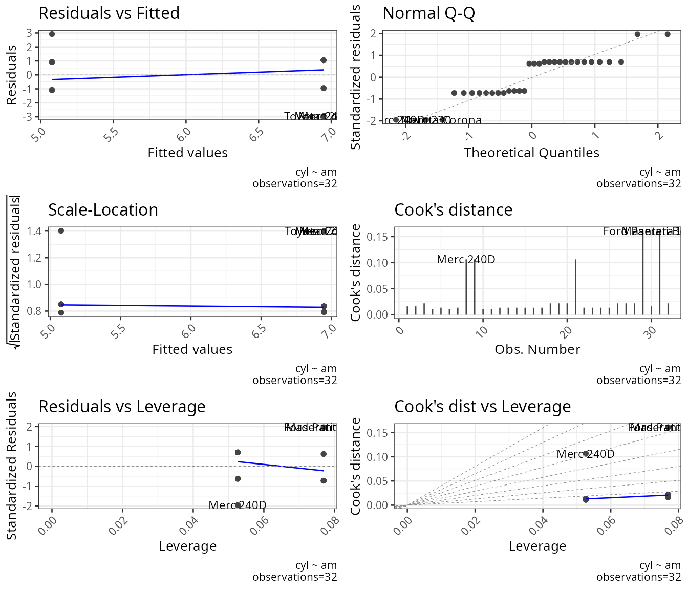
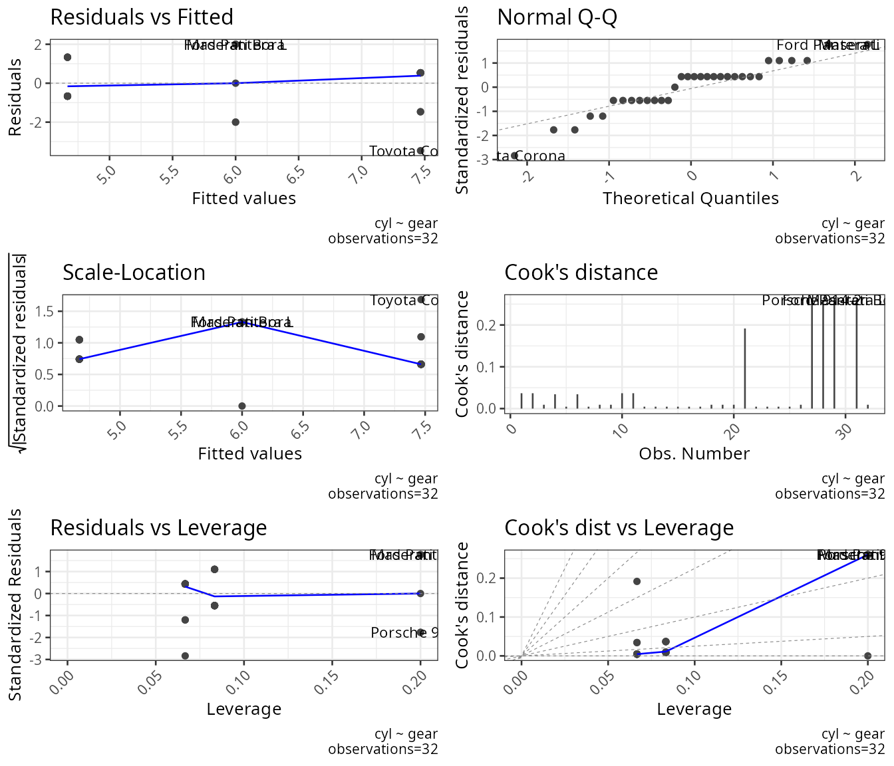
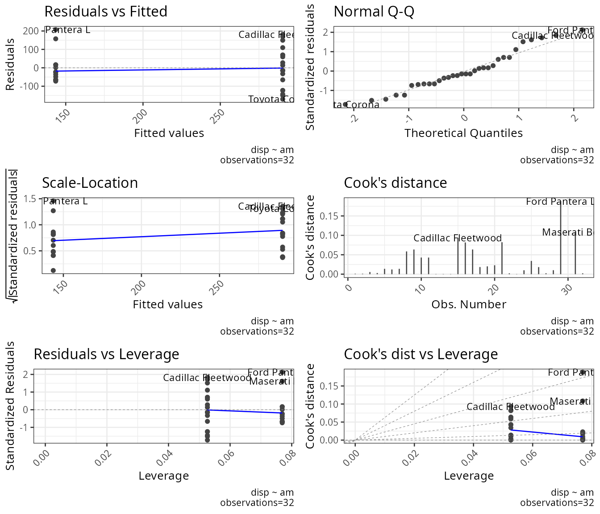
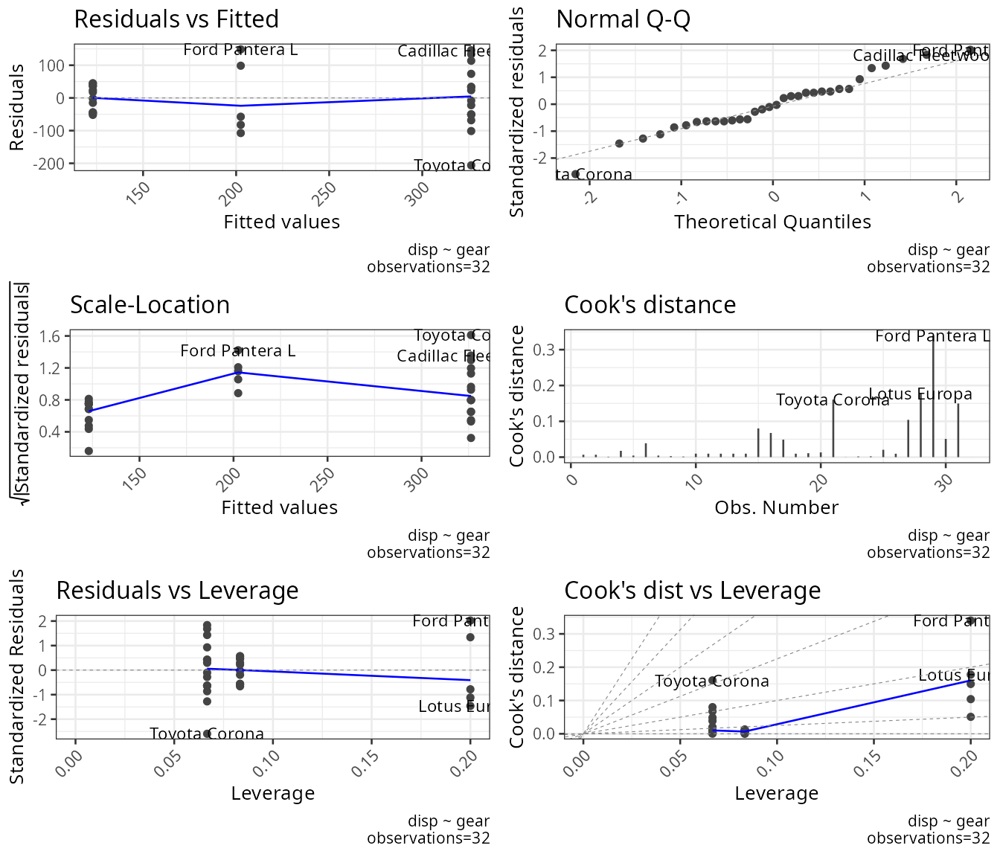
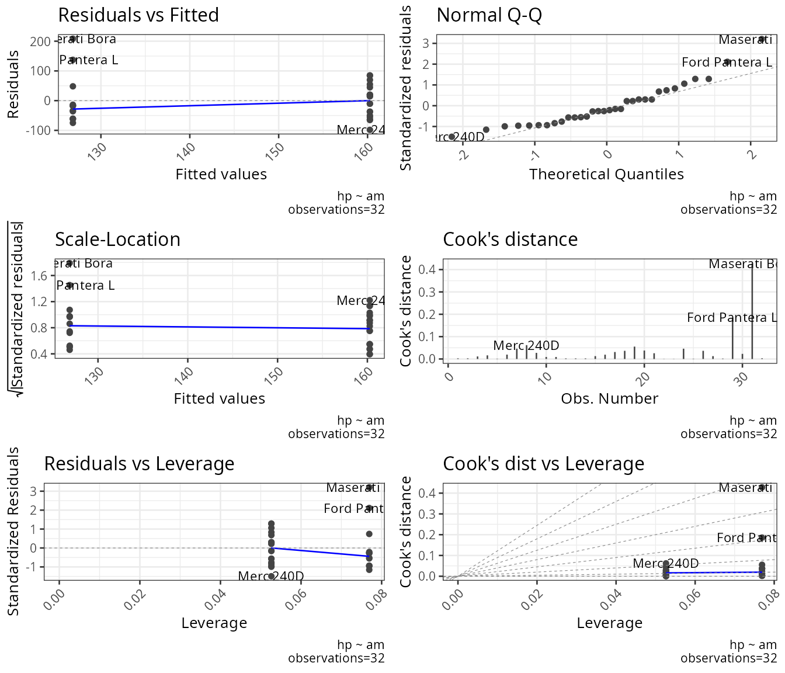
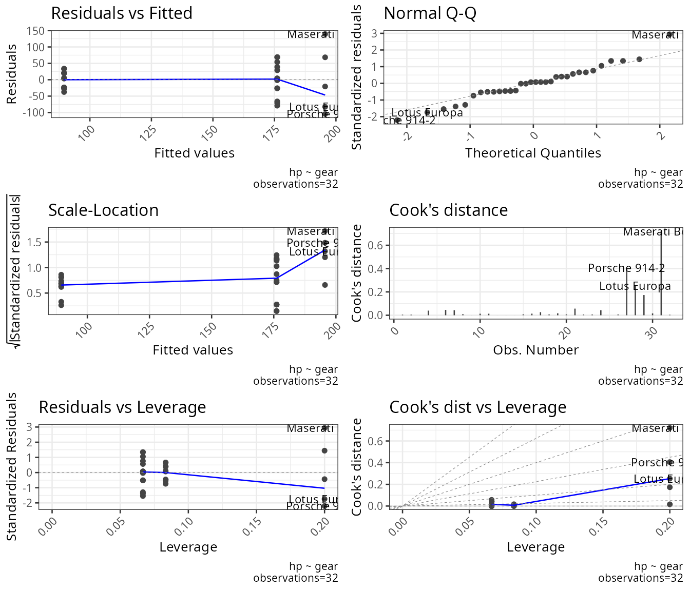
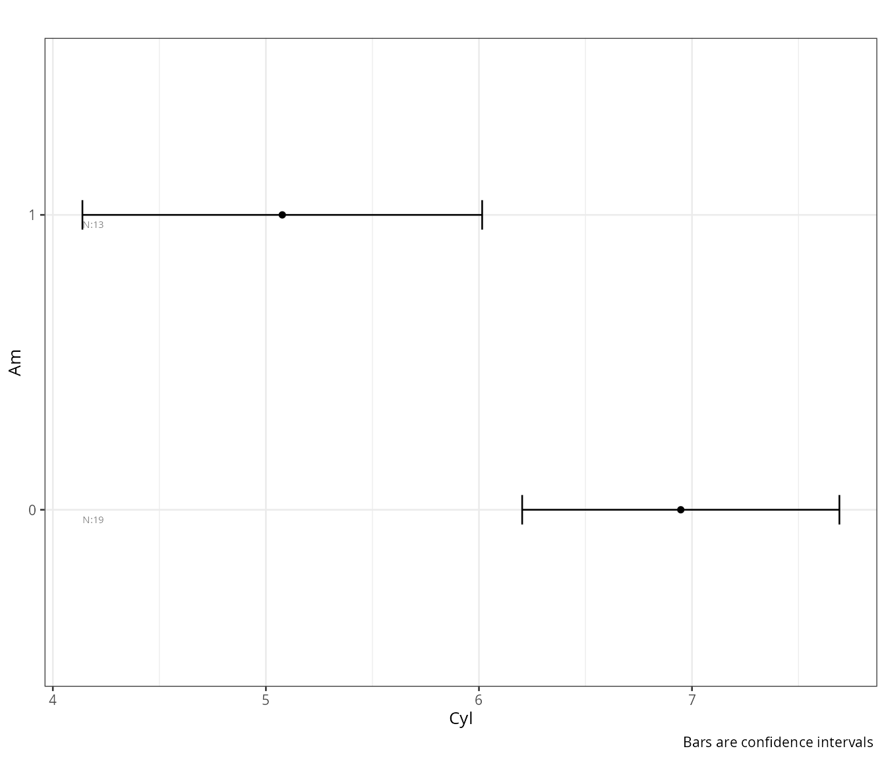
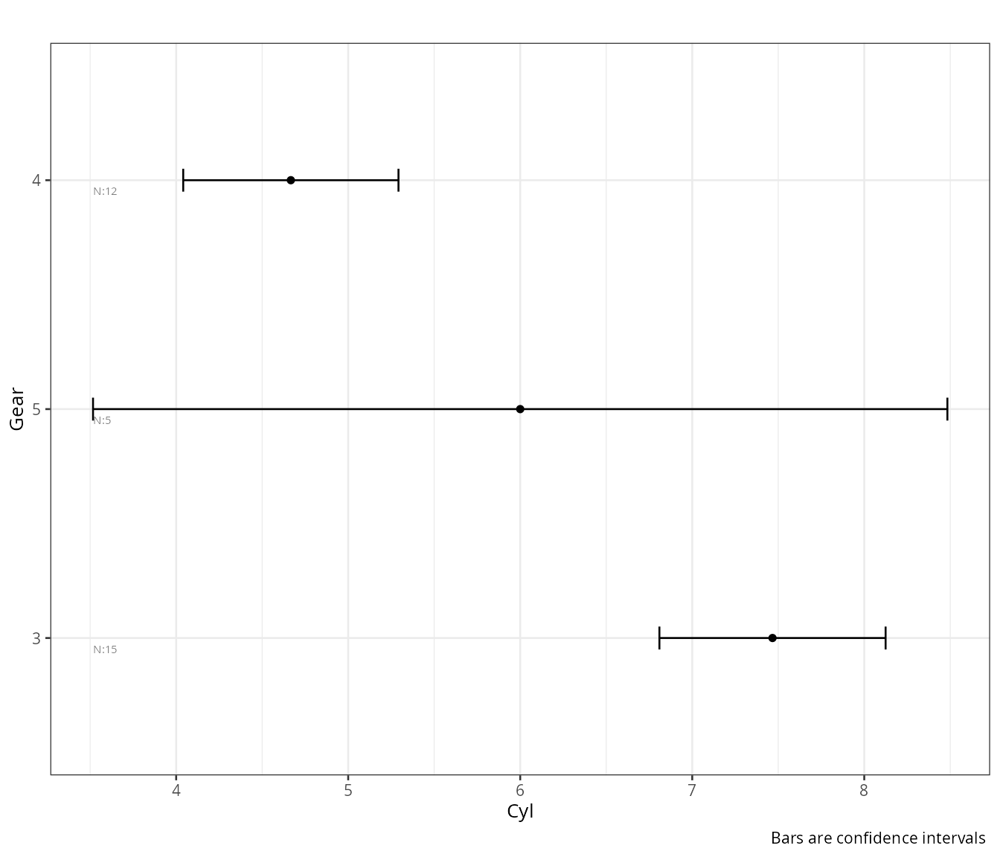
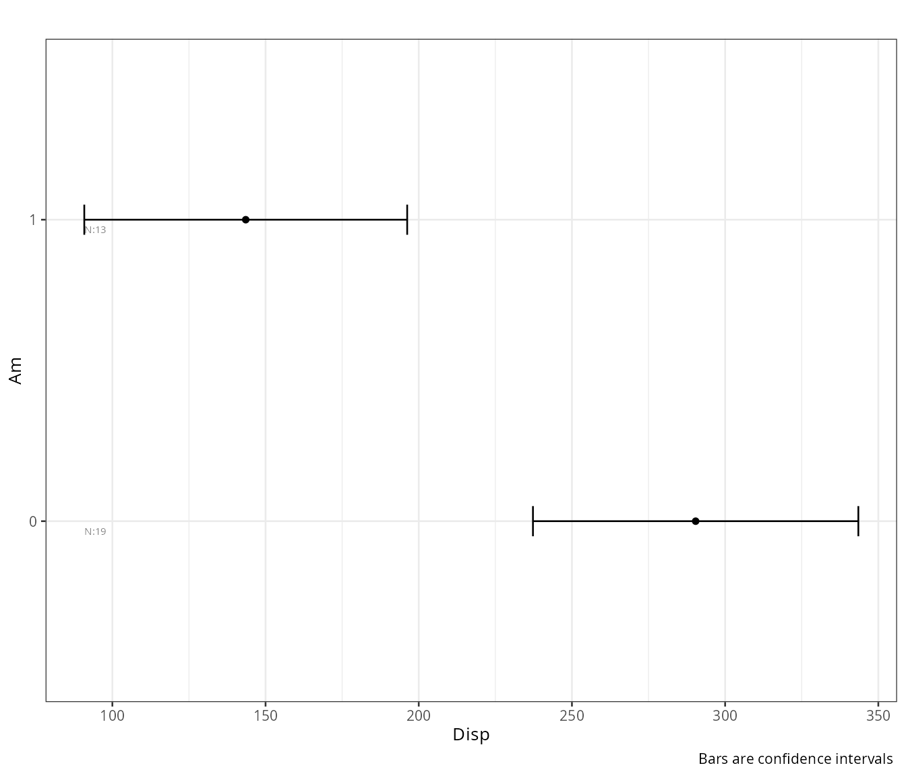
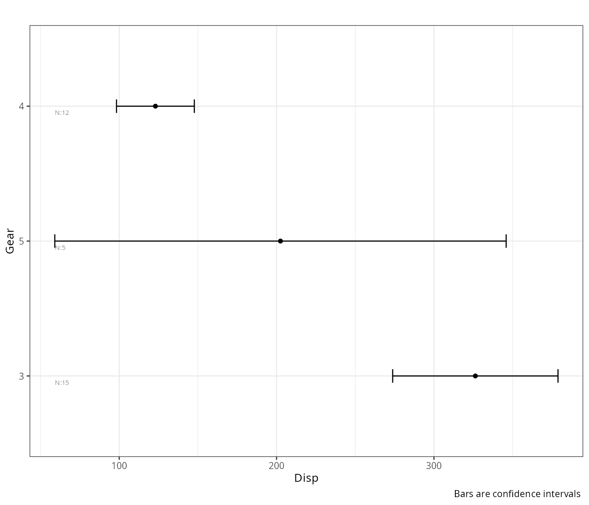
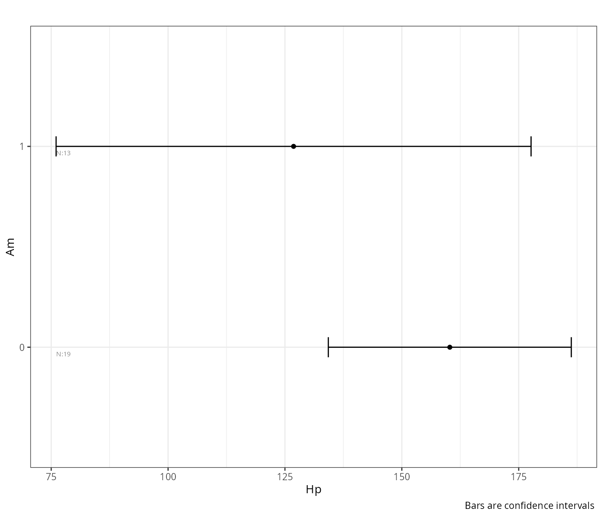
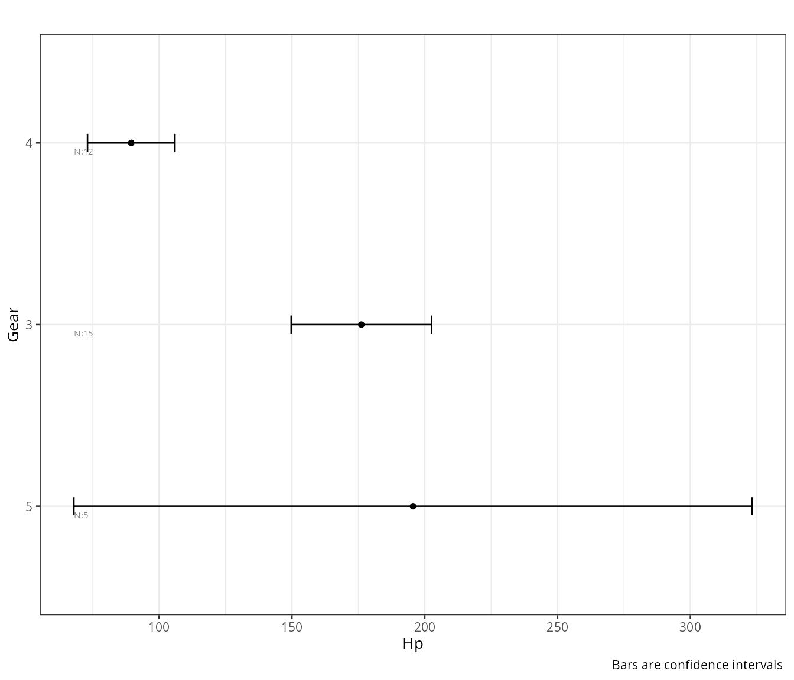
## $instructions
## $instructions$fisher
## [1] "Fisher assumes homoscedasticity (equal variances)"
##
## $instructions$welch
## [1] "Welch does not assume homoscedasticity (it allows unequal variances)"
##
## $instructions$kruskal
## [1] "Kruskal Wallis procedure does not assume normality but it is not an alternative for violations of heteroscedasticity"
##
## $instructions$tukey
## [1] "Posthoc Tukey (Tukey-Kramer): handles unequal sample sizes but assumes equal variances"
##
## $instructions$games_howell
## [1] "Posthoc Games Howell: good for unequal sample sizes and heteroscedasticity"
##
## $instructions$homogeneity_instruction
## [1] "significant tests show heteroscedasticity and suggest the use of Welch or alternative procedures. Levene test depends on normality: Non normal distributions may result in false significant results. Sample size may affect test results"
##
##
## $fisher
## DV IV formula method ss_effect ss_error ms_effect ms_error etasq partial.etasq omegasq partial.omegasq cohens.f power statistic df_effect
## 1 cyl am cyl ~ am Assuming homoscedasticity 27.00455 71.87045 27.00455 2.395682 0.27311813 0.27311813 0.24300096 0.24300096 0.6129758 0.9184281 11.272181 1
## 2 cyl gear cyl ~ gear Assuming homoscedasticity 52.47500 46.40000 26.23750 1.600000 0.53072061 0.53072061 0.49042050 0.49042050 1.0634504 0.9996388 16.398437 2
## 3 disp am disp ~ am Assuming homoscedasticity 166450.11542 309734.67927 166450.11542 10324.489309 0.34954941 0.34954941 0.32090986 0.32090986 0.7330728 0.9798600 16.121874 1
## 4 disp gear disp ~ gear Assuming homoscedasticity 280220.63002 195964.16467 140110.31501 6757.384989 0.58847034 0.58847034 0.55225216 0.55225216 1.1958087 0.9999773 20.734399 2
## 5 hp am hp ~ am Assuming homoscedasticity 8619.49848 137107.37652 8619.49848 4570.245884 0.05914831 0.05914831 0.02694165 0.02694165 0.2507325 0.2790832 1.886003 1
## 6 hp gear hp ~ gear Assuming homoscedasticity 64212.94167 81513.93333 32106.47083 2810.825287 0.44063898 0.44063898 0.39445401 0.39445401 0.8875552 0.9929814 11.422436 2
## df_error p bonferroni_p significant
## 1 30 2.151207e-03 0.008333333 TRUE
## 2 29 1.720904e-05 0.008333333 TRUE
## 3 30 3.662114e-04 0.008333333 TRUE
## 4 29 2.563401e-06 0.008333333 TRUE
## 5 30 1.798309e-01 0.008333333 FALSE
## 6 29 2.195517e-04 0.008333333 TRUE
##
## $welch
## DV IV formula method ss_effect ss_error ms_effect ms_error etasq partial.etasq omegasq partial.omegasq cohens.f power statistic df_effect df_error
## 1 cyl am cyl ~ am Assuming heteroscedasticity 11.250079 25.85363 11.250079 1.000000 0.30320635 0.30320635 0.26900478 0.26900478 0.6596553 0.9484216 11.250079 1 25.853626
## 2 cyl gear cyl ~ gear Assuming heteroscedasticity 89.718224 21.14094 44.859112 2.134628 0.80929909 0.80929909 0.75622706 0.75622706 2.0600518 1.0000000 21.014951 2 9.903806
## 3 disp am disp ~ am Assuming heteroscedasticity 17.620909 29.25845 17.620909 1.000000 0.37587775 0.37587775 0.34714140 0.34714140 0.7760478 0.9887519 17.620909 1 29.258453
## 4 disp gear disp ~ gear Assuming heteroscedasticity 115.251778 20.05336 57.625889 2.142450 0.85179157 0.85179157 0.80733957 0.80733957 2.3973432 1.0000000 26.897193 2 9.360015
## 5 hp am hp ~ am Assuming heteroscedasticity 1.603234 18.71541 1.603234 1.000000 0.07890458 0.07890458 0.02829608 0.02829608 0.2926839 0.3488429 1.603234 1 18.715410
## 6 hp gear hp ~ gear Assuming heteroscedasticity 78.700513 19.94351 39.350256 2.143291 0.79782339 0.79782339 0.73832634 0.73832634 1.9864971 1.0000000 18.359738 2 9.305091
## p bonferroni_p significant
## 1 0.0024647126 0.008333333 TRUE
## 2 0.0002731347 0.008333333 TRUE
## 3 0.0002300413 0.008333333 TRUE
## 4 0.0001317283 0.008333333 TRUE
## 5 0.2209795813 0.008333333 FALSE
## 6 0.0005886831 0.008333333 TRUE
##
## $kruskal_wallis
## IV DV formula method etasq epsilonsq H df p bonferroni_p significant
## 1 am cyl cyl ~ am Kruskal-Wallis rank sum test 0.2483103 0.2725583 8.449308 1 0.0036518239 0.008333333 TRUE
## 2 gear cyl cyl ~ gear Kruskal-Wallis rank sum test 0.5076650 0.5394286 16.722286 2 0.0002337770 0.008333333 TRUE
## 3 am disp disp ~ am Kruskal-Wallis rank sum test 0.3691091 0.3894605 12.073274 1 0.0005114979 0.008333333 TRUE
## 4 gear disp disp ~ gear Kruskal-Wallis rank sum test 0.5026731 0.5347587 16.577519 2 0.0002513261 0.008333333 TRUE
## 5 am hp hp ~ am Kruskal-Wallis rank sum test 0.1023240 0.1312813 4.069719 1 0.0436585370 0.008333333 FALSE
## 6 gear hp hp ~ gear Kruskal-Wallis rank sum test 0.4347059 0.4711765 14.606471 2 0.0006733567 0.008333333 TRUE
##
## $games_howell
## method IV DV LEVEL t df p bonferroni_p significant
## 1 Games Howell am cyl 0:1 3.3541138 25.853626 2.464713e-03 0.008333333 TRUE
## 2 Games Howell gear cyl 3:4 6.6975616 24.949414 1.510268e-06 0.008333333 TRUE
## 3 Games Howell gear cyl 3:5 1.5512092 4.975258 3.466759e-01 0.008333333 FALSE
## 4 Games Howell gear cyl 4:5 1.4206860 4.830969 4.016459e-01 0.008333333 FALSE
## 5 Games Howell am disp 0:1 4.1977266 29.258453 2.300413e-04 0.008333333 TRUE
## 6 Games Howell gear disp 3:4 7.5447410 19.415582 9.992173e-07 0.008333333 TRUE
## 7 Games Howell gear disp 3:5 2.1661489 5.915543 1.573336e-01 0.008333333 FALSE
## 8 Games Howell gear disp 4:5 1.5033871 4.383729 3.741102e-01 0.008333333 FALSE
## 9 Games Howell am hp 0:1 1.2661888 18.715410 2.209796e-01 0.008333333 FALSE
## 10 Games Howell gear hp 3:4 6.0143334 22.355479 1.277187e-05 0.008333333 TRUE
## 11 Games Howell gear hp 3:5 0.4088898 4.587327 9.136296e-01 0.008333333 FALSE
## 12 Games Howell gear hp 4:5 2.2772062 4.213060 1.655664e-01 0.008333333 FALSE
##
## $tukey
## Method IV DV LEVEL t df p bonferroni_p significant
## 1 Tukey am cyl 0:1 3.3574068 30 2.151207e-03 0.008333333 TRUE
## 2 Tukey gear cyl 3:4 5.7154761 29 1.019711e-05 0.008333333 TRUE
## 3 Tukey gear cyl 3:5 2.2453656 29 8.029755e-02 0.008333333 FALSE
## 4 Tukey gear cyl 4:5 1.9802951 29 1.351338e-01 0.008333333 FALSE
## 5 Tukey am disp 0:1 4.0152053 30 3.662114e-04 0.008333333 TRUE
## 6 Tukey gear disp 3:4 6.3850869 29 1.638269e-06 0.008333333 TRUE
## 7 Tukey gear disp 3:5 2.9168702 29 1.800373e-02 0.008333333 FALSE
## 8 Tukey gear disp 4:5 1.8160534 29 1.821800e-01 0.008333333 FALSE
## 9 Tukey am hp 0:1 1.3733183 30 1.798309e-01 0.008333333 FALSE
## 10 Tukey gear hp 3:4 4.2191257 29 6.267499e-04 0.008333333 TRUE
## 11 Tukey gear hp 3:5 0.7110339 29 7.589758e-01 0.008333333 FALSE
## 12 Tukey gear hp 4:5 3.7596691 29 2.144708e-03 0.008333333 TRUE
##
## $homogeneity
## Test DV IV Statistic df_1 df_2 p bonferroni_p significant
## 1 Levene cyl am 2.640471e-04 1 30 0.9871429143 0.008333333 FALSE
## 2 Levene cyl gear 2.485472e+00 2 29 0.1008580083 0.008333333 FALSE
## 3 Levene disp am 1.687300e+00 1 30 0.2038527460 0.008333333 FALSE
## 4 Levene disp gear 5.310649e+00 2 29 0.0108344001 0.008333333 FALSE
## 5 Levene hp am 1.096916e+00 1 30 0.3033090390 0.008333333 FALSE
## 6 Levene hp gear 8.909260e+00 2 29 0.0009631958 0.008333333 TRUE
## 7 Bartlett cyl am 3.570702e-04 1 NA 0.9849238307 0.008333333 FALSE
## 8 Bartlett cyl gear 3.403548e+00 2 NA 0.1823597392 0.008333333 FALSE
## 9 Bartlett disp am 7.310694e-01 1 NA 0.3925367660 0.008333333 FALSE
## 10 Bartlett disp gear 9.151295e+00 2 NA 0.0102996280 0.008333333 FALSE
## 11 Bartlett hp am 2.820842e+00 1 NA 0.0930475533 0.008333333 FALSE
## 12 Bartlett hp gear 1.263581e+01 2 NA 0.0018037216 0.008333333 TRUE## $instructions
## $instructions$fisher
## [1] "Fisher assumes homoscedasticity (equal variances)"
##
## $instructions$welch
## [1] "Welch does not assume homoscedasticity (it allows unequal variances)"
##
## $instructions$kruskal
## [1] "Kruskal Wallis procedure does not assume normality but it is not an alternative for violations of heteroscedasticity"
##
## $instructions$tukey
## [1] "Posthoc Tukey (Tukey-Kramer): handles unequal sample sizes but assumes equal variances"
##
## $instructions$games_howell
## [1] "Posthoc Games Howell: good for unequal sample sizes and heteroscedasticity"
##
## $instructions$homogeneity_instruction
## [1] "significant tests show heteroscedasticity and suggest the use of Welch or alternative procedures. Levene test depends on normality: Non normal distributions may result in false significant results. Sample size may affect test results"
##
##
## $fisher
## DV IV formula method ss_effect ss_error ms_effect ms_error etasq partial.etasq omegasq partial.omegasq cohens.f power statistic df_effect
## 1 cyl am cyl ~ am Assuming homoscedasticity 27.00455 71.87045 27.00455 2.395682 0.27311813 0.27311813 0.24300096 0.24300096 0.6129758 0.9184281 11.272181 1
## 2 cyl gear cyl ~ gear Assuming homoscedasticity 52.47500 46.40000 26.23750 1.600000 0.53072061 0.53072061 0.49042050 0.49042050 1.0634504 0.9996388 16.398437 2
## 3 disp am disp ~ am Assuming homoscedasticity 166450.11542 309734.67927 166450.11542 10324.489309 0.34954941 0.34954941 0.32090986 0.32090986 0.7330728 0.9798600 16.121874 1
## 4 disp gear disp ~ gear Assuming homoscedasticity 280220.63002 195964.16467 140110.31501 6757.384989 0.58847034 0.58847034 0.55225216 0.55225216 1.1958087 0.9999773 20.734399 2
## 5 hp am hp ~ am Assuming homoscedasticity 8619.49848 137107.37652 8619.49848 4570.245884 0.05914831 0.05914831 0.02694165 0.02694165 0.2507325 0.2790832 1.886003 1
## 6 hp gear hp ~ gear Assuming homoscedasticity 64212.94167 81513.93333 32106.47083 2810.825287 0.44063898 0.44063898 0.39445401 0.39445401 0.8875552 0.9929814 11.422436 2
## df_error p bonferroni_p significant
## 1 30 2.151207e-03 0.008333333 TRUE
## 2 29 1.720904e-05 0.008333333 TRUE
## 3 30 3.662114e-04 0.008333333 TRUE
## 4 29 2.563401e-06 0.008333333 TRUE
## 5 30 1.798309e-01 0.008333333 FALSE
## 6 29 2.195517e-04 0.008333333 TRUE
##
## $welch
## DV IV formula method ss_effect ss_error ms_effect ms_error etasq partial.etasq omegasq partial.omegasq cohens.f power statistic df_effect df_error
## 1 cyl am cyl ~ am Assuming heteroscedasticity 11.250079 25.85363 11.250079 1.000000 0.30320635 0.30320635 0.26900478 0.26900478 0.6596553 0.9484216 11.250079 1 25.853626
## 2 cyl gear cyl ~ gear Assuming heteroscedasticity 89.718224 21.14094 44.859112 2.134628 0.80929909 0.80929909 0.75622706 0.75622706 2.0600518 1.0000000 21.014951 2 9.903806
## 3 disp am disp ~ am Assuming heteroscedasticity 17.620909 29.25845 17.620909 1.000000 0.37587775 0.37587775 0.34714140 0.34714140 0.7760478 0.9887519 17.620909 1 29.258453
## 4 disp gear disp ~ gear Assuming heteroscedasticity 115.251778 20.05336 57.625889 2.142450 0.85179157 0.85179157 0.80733957 0.80733957 2.3973432 1.0000000 26.897193 2 9.360015
## 5 hp am hp ~ am Assuming heteroscedasticity 1.603234 18.71541 1.603234 1.000000 0.07890458 0.07890458 0.02829608 0.02829608 0.2926839 0.3488429 1.603234 1 18.715410
## 6 hp gear hp ~ gear Assuming heteroscedasticity 78.700513 19.94351 39.350256 2.143291 0.79782339 0.79782339 0.73832634 0.73832634 1.9864971 1.0000000 18.359738 2 9.305091
## p bonferroni_p significant
## 1 0.0024647126 0.008333333 TRUE
## 2 0.0002731347 0.008333333 TRUE
## 3 0.0002300413 0.008333333 TRUE
## 4 0.0001317283 0.008333333 TRUE
## 5 0.2209795813 0.008333333 FALSE
## 6 0.0005886831 0.008333333 TRUE
##
## $kruskal_wallis
## IV DV formula method etasq epsilonsq H df p bonferroni_p significant
## 1 am cyl cyl ~ am Kruskal-Wallis rank sum test 0.2483103 0.2725583 8.449308 1 0.0036518239 0.008333333 TRUE
## 2 gear cyl cyl ~ gear Kruskal-Wallis rank sum test 0.5076650 0.5394286 16.722286 2 0.0002337770 0.008333333 TRUE
## 3 am disp disp ~ am Kruskal-Wallis rank sum test 0.3691091 0.3894605 12.073274 1 0.0005114979 0.008333333 TRUE
## 4 gear disp disp ~ gear Kruskal-Wallis rank sum test 0.5026731 0.5347587 16.577519 2 0.0002513261 0.008333333 TRUE
## 5 am hp hp ~ am Kruskal-Wallis rank sum test 0.1023240 0.1312813 4.069719 1 0.0436585370 0.008333333 FALSE
## 6 gear hp hp ~ gear Kruskal-Wallis rank sum test 0.4347059 0.4711765 14.606471 2 0.0006733567 0.008333333 TRUE
##
## $games_howell
## method IV DV LEVEL t df p bonferroni_p significant
## 1 Games Howell am cyl 0:1 3.3541138 25.853626 2.464713e-03 0.008333333 TRUE
## 2 Games Howell gear cyl 3:4 6.6975616 24.949414 1.510268e-06 0.008333333 TRUE
## 3 Games Howell gear cyl 3:5 1.5512092 4.975258 3.466759e-01 0.008333333 FALSE
## 4 Games Howell gear cyl 4:5 1.4206860 4.830969 4.016459e-01 0.008333333 FALSE
## 5 Games Howell am disp 0:1 4.1977266 29.258453 2.300413e-04 0.008333333 TRUE
## 6 Games Howell gear disp 3:4 7.5447410 19.415582 9.992173e-07 0.008333333 TRUE
## 7 Games Howell gear disp 3:5 2.1661489 5.915543 1.573336e-01 0.008333333 FALSE
## 8 Games Howell gear disp 4:5 1.5033871 4.383729 3.741102e-01 0.008333333 FALSE
## 9 Games Howell am hp 0:1 1.2661888 18.715410 2.209796e-01 0.008333333 FALSE
## 10 Games Howell gear hp 3:4 6.0143334 22.355479 1.277187e-05 0.008333333 TRUE
## 11 Games Howell gear hp 3:5 0.4088898 4.587327 9.136296e-01 0.008333333 FALSE
## 12 Games Howell gear hp 4:5 2.2772062 4.213060 1.655664e-01 0.008333333 FALSE
##
## $tukey
## Method IV DV LEVEL t df p bonferroni_p significant
## 1 Tukey am cyl 0:1 3.3574068 30 2.151207e-03 0.008333333 TRUE
## 2 Tukey gear cyl 3:4 5.7154761 29 1.019711e-05 0.008333333 TRUE
## 3 Tukey gear cyl 3:5 2.2453656 29 8.029755e-02 0.008333333 FALSE
## 4 Tukey gear cyl 4:5 1.9802951 29 1.351338e-01 0.008333333 FALSE
## 5 Tukey am disp 0:1 4.0152053 30 3.662114e-04 0.008333333 TRUE
## 6 Tukey gear disp 3:4 6.3850869 29 1.638269e-06 0.008333333 TRUE
## 7 Tukey gear disp 3:5 2.9168702 29 1.800373e-02 0.008333333 FALSE
## 8 Tukey gear disp 4:5 1.8160534 29 1.821800e-01 0.008333333 FALSE
## 9 Tukey am hp 0:1 1.3733183 30 1.798309e-01 0.008333333 FALSE
## 10 Tukey gear hp 3:4 4.2191257 29 6.267499e-04 0.008333333 TRUE
## 11 Tukey gear hp 3:5 0.7110339 29 7.589758e-01 0.008333333 FALSE
## 12 Tukey gear hp 4:5 3.7596691 29 2.144708e-03 0.008333333 TRUE
##
## $homogeneity
## Test DV IV Statistic df_1 df_2 p bonferroni_p significant
## 1 Levene cyl am 2.640471e-04 1 30 0.9871429143 0.008333333 FALSE
## 2 Levene cyl gear 2.485472e+00 2 29 0.1008580083 0.008333333 FALSE
## 3 Levene disp am 1.687300e+00 1 30 0.2038527460 0.008333333 FALSE
## 4 Levene disp gear 5.310649e+00 2 29 0.0108344001 0.008333333 FALSE
## 5 Levene hp am 1.096916e+00 1 30 0.3033090390 0.008333333 FALSE
## 6 Levene hp gear 8.909260e+00 2 29 0.0009631958 0.008333333 TRUE
## 7 Bartlett cyl am 3.570702e-04 1 NA 0.9849238307 0.008333333 FALSE
## 8 Bartlett cyl gear 3.403548e+00 2 NA 0.1823597392 0.008333333 FALSE
## 9 Bartlett disp am 7.310694e-01 1 NA 0.3925367660 0.008333333 FALSE
## 10 Bartlett disp gear 9.151295e+00 2 NA 0.0102996280 0.008333333 FALSE
## 11 Bartlett hp am 2.820842e+00 1 NA 0.0930475533 0.008333333 FALSE
## 12 Bartlett hp gear 1.263581e+01 2 NA 0.0018037216 0.008333333 TRUEReport Factorial ANOVA
report_factorial_anova handles designs with multiple
factors, both within-subjects (repeated measures) and between-subjects,
including mixed designs and ANCOVA (with covariates). It returns effect
sizes and optionally post hoc comparisons.
Define models
A synthetic dataset is generated here with 80 subjects
(id), four independent variables
(IV1–IV4), and four dependent variables
(DV1–DV4). The DVs are drawn from a correlated
multivariate distribution (near-zero inter-correlations) and shifted so
that IV1 groups differ on DV1 — this ensures
at least one meaningful effect to detect.
- r1: Fully within-subjects design (IV1 × IV2 repeated, with post hocs)
- r2: Fully between-subjects design (IV1 × IV2, with post hocs)
- r3: Between-subjects design without post hocs
- r4: Within-subjects design with covariates (DV3, DV4 as within-covariates)
set.seed(12345)
df<-data.frame(id=rep(seq(1,80),each=81,1),
IV1=rep(LETTERS[1:3],each=1,2160),
IV2=rep(LETTERS[4:6],each=3,720),
IV3=rep(LETTERS[7:9],each=9,240),
IV4=rep(LETTERS[10:12],each=27,80),
stringsAsFactors=FALSE)
ctdf<-data.frame(matrix(.01,ncol=4,nrow=4))
correlation_martix<-as.matrix(ctdf)
diag(correlation_martix)<-1
ctdf<-generate_correlation_matrix(correlation_martix,nrows=nrow(df))+10
names(ctdf)<-paste0("DV",1:4)
df<-data.frame(df,ctdf)
df$DV2<-df$DV2+10
df$DV3<-df$DV3+20
df$DV4<-df$DV4+30
df[df$IV1%in%"A",]$DV1<-df[df$IV1%in%"A",]$DV1+1
df[df$IV1%in%"B",]$DV1<-df[df$IV1%in%"B",]$DV1+2
df[df$IV1%in%"C",]$DV1<-df[df$IV1%in%"C",]$DV1+3
cdf(df)## $summary
## COLLUMNS ROWS TOTAL EMPTY null NAN na INF FIN FACTOR
## 1 9 6480 58320 0 0 0 0 0 32400 0
##
## $check
## NAMES EMPTY null na NOT_NA NAN INF FIN RANGE MEAN MEDIAN SD MIN MAX MODE TYPE CLASS FACTOR
## 1 id 0 0 0 6480 0 0 6480 80 40.50 40.50 23.09 1 80 numeric integer integer FALSE
## 2 IV1 0 0 0 6480 0 0 0 3 NA NA NA A C character character character FALSE
## 3 IV2 0 0 0 6480 0 0 0 3 NA NA NA D F character character character FALSE
## 4 IV3 0 0 0 6480 0 0 0 3 NA NA NA G I character character character FALSE
## 5 IV4 0 0 0 6480 0 0 0 3 NA NA NA J L character character character FALSE
## 6 DV1 0 0 0 6480 0 0 6480 6480 11.98 11.99 1.30 7.51291207335776 16.2640490751635 numeric double numeric FALSE
## 7 DV2 0 0 0 6480 0 0 6480 6480 20.01 20.02 1.00 16.3378832518107 23.6232526335438 numeric double numeric FALSE
## 8 DV3 0 0 0 6480 0 0 6480 6480 30.01 30.00 0.98 26.1265203294059 33.1419727424988 numeric double numeric FALSE
## 9 DV4 0 0 0 6480 0 0 6480 6480 40.00 39.99 1.01 36.482400155701 43.7443144516511 numeric double numeric FALSE
r1<-report_factorial_anova(df=df,
wid="id",
dv=c("DV1","DV2"),
within=c("IV1","IV2"),
within_full=c("IV1","IV2"),
between=NULL,
within_covariates=NULL,
between_covariates=NULL,
post_hoc=TRUE)
r2<-report_factorial_anova(df=df,
wid="id",
dv=c("DV1","DV2"),
within=NULL,
within_full=NULL,
between=c("IV1","IV2"),
within_covariates=NULL,
between_covariates=NULL,
post_hoc=TRUE)
r3<-report_factorial_anova(df=df,
wid="id",
dv=c("DV1","DV2"),
# within=c("IV3","IV4"),
# within_full=c("IV3","IV4"),
between=c("IV1","IV2"),
within_covariates=NULL,
between_covariates=NULL,
post_hoc=FALSE)
r4<-report_factorial_anova(df=df,
wid="id",
dv=c("DV1","DV2"),
within=c("IV1","IV2"),
within_full=c("IV1","IV2"),
between=NULL,
within_covariates=c("DV3","DV4"),
between_covariates=NULL,
post_hoc=TRUE)Within-subjects with post hocs
r1## $omnibus
## dv Effect DFn DFd SSn SSd F p W[M] p[M] GGe p[GG] HFe p[HF]
## 1 DV1 IV1 2 158 5.006671e+02 17.930125 2.205935e+03 3.643342e-116 0.9782102 0.42350247 0.9786749 9.499976e-114 1.0032624 3.643342e-116
## 2 DV1 IV2 2 158 4.504472e-01 17.900158 1.987989e+00 1.403820e-01 0.9706304 0.31268097 0.9714684 1.418139e-01 0.9955929 1.406031e-01
## 3 DV1 IV1:IV2 4 316 2.462502e-01 32.449806 5.995034e-01 6.632592e-01 0.8975588 0.49773872 0.9505826 6.548731e-01 1.0046403 6.632592e-01
## 4 DV1 (Intercept) 1 79 1.033068e+05 8.172377 9.986373e+05 8.512832e-164 NA NA NA NA NA NA
## 5 DV2 IV1 2 158 3.109476e-01 17.270983 1.422320e+00 2.442245e-01 0.9774644 0.41108985 0.9779610 2.443691e-01 1.0025025 2.442245e-01
## 6 DV2 IV2 2 158 3.547385e-01 17.657932 1.587068e+00 2.077672e-01 0.9975940 0.91033076 0.9975998 2.078264e-01 1.0234165 2.077672e-01
## 7 DV2 IV1:IV2 4 316 3.513928e-01 34.051055 8.152474e-01 5.161703e-01 0.8244874 0.09264403 0.9243789 5.080674e-01 0.9754035 5.136027e-01
## 8 DV2 (Intercept) 1 79 2.884130e+05 10.463958 2.177439e+06 3.618624e-177 NA NA NA NA NA NA
##
## $omnibus_effect_size
## dv etasq partial.etasq omegasq partial.omegasq epsilonsq cohens.f group term sumsq df meansq statistic p.value power
## 1 DV1 0.014 0.201 0.000 0.001 0.000 0.502 id Residuals 8.172 79 0.103 NA NA 0.999
## 2 DV1 0.866 0.939 0.866 0.871 0.866 3.928 id:IV1 IV1 500.667 2 250.334 2205.935 0.000 1.000
## 3 DV1 0.031 0.356 0.003 0.023 0.003 0.743 id:IV1 Residuals 17.930 158 0.113 NA NA 1.000
## 4 DV1 0.001 0.014 0.000 0.003 0.000 0.118 id:IV2 IV2 0.450 2 0.225 1.988 0.140 0.450
## 5 DV1 0.031 0.356 0.003 0.022 0.003 0.743 id:IV2 Residuals 17.900 158 0.113 NA NA 1.000
## 6 DV1 0.000 0.008 0.000 -0.002 0.000 0.087 id:IV1:IV2 IV1:IV2 0.246 4 0.062 0.600 0.663 0.200
## 7 DV1 NA NA NA NA NA NA id:IV1:IV2 Residuals 32.450 316 0.103 NA NA NA
## 8 DV2 0.130 0.235 0.024 0.025 0.024 0.554 id Residuals 10.464 79 0.132 NA NA 1.000
## 9 DV2 0.004 0.009 0.001 0.001 0.001 0.096 id:IV1 IV1 0.311 2 0.155 1.422 0.244 0.311
## 10 DV2 0.215 0.337 0.003 0.003 0.003 0.712 id:IV1 Residuals 17.271 158 0.109 NA NA 1.000
## 11 DV2 0.004 0.010 0.002 0.002 0.002 0.102 id:IV2 IV2 0.355 2 0.177 1.587 0.208 0.349
## 12 DV2 0.219 0.341 0.008 0.008 0.008 0.720 id:IV2 Residuals 17.658 158 0.112 NA NA 1.000
## 13 DV2 0.004 0.010 -0.001 -0.001 -0.001 0.102 id:IV1:IV2 IV1:IV2 0.351 4 0.088 0.815 0.516 0.264
## 14 DV2 NA NA NA NA NA NA id:IV1:IV2 Residuals 34.051 316 0.108 NA NA NA
##
## $post_hoc
## dv contrast estimate SE df t.ratio p.value
## 1 DV1 A - B -1.0369057041 0.03075194 158.0000 -33.71838554 1.465494e-14
## 2 DV1 A - C -2.0425227385 0.03075194 158.0000 -66.41931749 1.465494e-14
## 3 DV1 B - C -1.0056170344 0.03075194 158.0000 -32.70093195 1.465494e-14
## 4 DV1 D - E 0.0504865094 0.03072623 158.0000 1.64310789 2.307019e-01
## 5 DV1 D - F 0.0553036770 0.03072623 158.0000 1.79988494 1.729367e-01
## 6 DV1 E - F 0.0048171676 0.03072623 158.0000 0.15677705 9.865421e-01
## 7 DV1 A D - B D -1.0083363900 0.05154774 472.9164 -19.56121477 3.020106e-11
## 8 DV1 A D - C D -2.0455057318 0.05154774 472.9164 -39.68177420 3.020106e-11
## 9 DV1 A D - A E 0.0727904308 0.05153241 472.9528 1.41251762 8.928075e-01
## 10 DV1 A D - B E -1.0144401291 0.05239777 553.4885 -19.36036702 4.328203e-10
## 11 DV1 A D - C E -1.9607328952 0.05239777 553.4885 -37.42015658 4.328203e-10
## 12 DV1 A D - A F 0.0585860764 0.05153241 472.9528 1.13687835 9.683248e-01
## 13 DV1 A D - B F -0.9565640860 0.05239777 553.4885 -18.25581545 4.328203e-10
## 14 DV1 A D - C F -1.9899530812 0.05239777 553.4885 -37.97781741 4.328203e-10
## 15 DV1 B D - C D -1.0371693419 0.05154774 472.9164 -20.12055942 3.020106e-11
## 16 DV1 B D - A E 1.0811268208 0.05239777 553.4885 20.63306788 4.328203e-10
## 17 DV1 B D - B E -0.0061037391 0.05153241 472.9528 -0.11844468 1.000000e+00
## 18 DV1 B D - C E -0.9523965053 0.05239777 553.4885 -18.17627809 4.328203e-10
## 19 DV1 B D - A F 1.0669224664 0.05239777 553.4885 20.36198089 4.328203e-10
## 20 DV1 B D - B F 0.0517723040 0.05153241 472.9528 1.00465529 9.853769e-01
## 21 DV1 B D - C F -0.9816166912 0.05239777 553.4885 -18.73393892 4.328203e-10
## 22 DV1 C D - A E 2.1182961626 0.05239777 553.4885 40.42721693 4.328203e-10
## 23 DV1 C D - B E 1.0310656027 0.05239777 553.4885 19.67766053 4.328203e-10
## 24 DV1 C D - C E 0.0847728366 0.05153241 472.9528 1.64503938 7.792801e-01
## 25 DV1 C D - A F 2.1040918082 0.05239777 553.4885 40.15612994 4.328203e-10
## 26 DV1 C D - B F 1.0889416459 0.05239777 553.4885 20.78221210 4.328203e-10
## 27 DV1 C D - C F 0.0555526506 0.05153241 472.9528 1.07801392 9.771442e-01
## 28 DV1 A E - B E -1.0872305599 0.05154774 472.9164 -21.09172167 3.020106e-11
## 29 DV1 A E - C E -2.0335233260 0.05154774 472.9164 -39.44932160 3.020106e-11
## 30 DV1 A E - A F -0.0142043544 0.05153241 472.9528 -0.27563926 9.999990e-01
## 31 DV1 A E - B F -1.0293545167 0.05239777 553.4885 -19.64500483 4.328203e-10
## 32 DV1 A E - C F -2.0627435120 0.05239777 553.4885 -39.36700679 4.328203e-10
## 33 DV1 B E - C E -0.9462927661 0.05154774 472.9164 -18.35759992 3.020106e-11
## 34 DV1 B E - A F 1.0730262055 0.05239777 553.4885 20.47846941 4.328203e-10
## 35 DV1 B E - B F 0.0578760432 0.05153241 472.9528 1.12309997 9.705838e-01
## 36 DV1 B E - C F -0.9755129521 0.05239777 553.4885 -18.61745039 4.328203e-10
## 37 DV1 C E - A F 2.0193189716 0.05239777 553.4885 38.53825898 4.328203e-10
## 38 DV1 C E - B F 1.0041688093 0.05239777 553.4885 19.16434113 4.328203e-10
## 39 DV1 C E - C F -0.0292201860 0.05153241 472.9528 -0.56702546 9.997406e-01
## 40 DV1 A F - B F -1.0151501623 0.05154774 472.9164 -19.69339850 3.020106e-11
## 41 DV1 A F - C F -2.0485391576 0.05154774 472.9164 -39.74062112 3.020106e-11
## 42 DV1 B F - C F -1.0333889953 0.05154774 472.9164 -20.04722261 3.020106e-11
## 43 DV2 A - B 0.0479519981 0.03018140 158.0000 1.58879309 2.534586e-01
## 44 DV2 A - C 0.0091815180 0.03018140 158.0000 0.30421115 9.502826e-01
## 45 DV2 B - C -0.0387704800 0.03018140 158.0000 -1.28458195 4.059592e-01
## 46 DV2 D - E 0.0188734694 0.03051763 158.0000 0.61844486 8.102461e-01
## 47 DV2 D - F -0.0347216147 0.03051763 158.0000 -1.13775605 4.923455e-01
## 48 DV2 E - F -0.0535950840 0.03051763 158.0000 -1.75620091 1.878610e-01
## 49 DV2 A D - B D 0.0011955595 0.05202748 473.9783 0.02297938 1.000000e+00
## 50 DV2 A D - C D -0.0240057438 0.05202748 473.9783 -0.46140509 9.999455e-01
## 51 DV2 A D - A E -0.0474360729 0.05222324 473.8582 -0.90833255 9.924667e-01
## 52 DV2 A D - B E 0.0514053968 0.05234705 564.8614 0.98201141 9.874125e-01
## 53 DV2 A D - C E 0.0298408999 0.05234705 564.8614 0.57005891 9.997310e-01
## 54 DV2 A D - A F -0.0483557728 0.05222324 473.8582 -0.92594348 9.914345e-01
## 55 DV2 A D - B F -0.0045368077 0.05234705 564.8614 -0.08666788 1.000000e+00
## 56 DV2 A D - C F -0.0740824478 0.05234705 564.8614 -1.41521735 8.918559e-01
## 57 DV2 B D - C D -0.0252013032 0.05202748 473.9783 -0.48438448 9.999211e-01
## 58 DV2 B D - A E -0.0486316323 0.05234705 564.8614 -0.92902343 9.912641e-01
## 59 DV2 B D - B E 0.0502098373 0.05222324 473.8582 0.96144615 9.890141e-01
## 60 DV2 B D - C E 0.0286453404 0.05234705 564.8614 0.54721981 9.998020e-01
## 61 DV2 B D - A F -0.0495513322 0.05234705 564.8614 -0.94659271 9.901081e-01
## 62 DV2 B D - B F -0.0057323672 0.05222324 473.8582 -0.10976659 1.000000e+00
## 63 DV2 B D - C F -0.0752780072 0.05234705 564.8614 -1.43805645 8.826715e-01
## 64 DV2 C D - A E -0.0234303291 0.05234705 564.8614 -0.44759601 9.999570e-01
## 65 DV2 C D - B E 0.0754111406 0.05234705 564.8614 1.44059973 8.816204e-01
## 66 DV2 C D - C E 0.0538466437 0.05222324 473.8582 1.03108576 9.827313e-01
## 67 DV2 C D - A F -0.0243500290 0.05234705 564.8614 -0.46516529 9.999423e-01
## 68 DV2 C D - B F 0.0194689360 0.05234705 564.8614 0.37192043 9.999897e-01
## 69 DV2 C D - C F -0.0500767040 0.05222324 473.8582 -0.95889684 9.892040e-01
## 70 DV2 A E - B E 0.0988414697 0.05202748 473.9783 1.89979357 6.142402e-01
## 71 DV2 A E - C E 0.0772769728 0.05202748 473.9783 1.48531074 8.621149e-01
## 72 DV2 A E - A F -0.0009196999 0.05222324 473.8582 -0.01761093 1.000000e+00
## 73 DV2 A E - B F 0.0428992651 0.05234705 564.8614 0.81951644 9.962788e-01
## 74 DV2 A E - C F -0.0266463749 0.05234705 564.8614 -0.50903302 9.998853e-01
## 75 DV2 B E - C E -0.0215644969 0.05202748 473.9783 -0.41448284 9.999761e-01
## 76 DV2 B E - A F -0.0997611696 0.05234705 564.8614 -1.90576502 6.100317e-01
## 77 DV2 B E - B F -0.0559422046 0.05222324 473.8582 -1.07121274 9.780294e-01
## 78 DV2 B E - C F -0.1254878446 0.05234705 564.8614 -2.39722876 2.874034e-01
## 79 DV2 C E - A F -0.0781966727 0.05234705 564.8614 -1.49381251 8.583339e-01
## 80 DV2 C E - B F -0.0343777077 0.05234705 564.8614 -0.65672679 9.992339e-01
## 81 DV2 C E - C F -0.1039233477 0.05222324 473.8582 -1.98998260 5.511505e-01
## 82 DV2 A F - B F 0.0438189650 0.05202748 473.9783 0.84222734 9.954928e-01
## 83 DV2 A F - C F -0.0257266750 0.05202748 473.9783 -0.49448245 9.999077e-01
## 84 DV2 B F - C F -0.0695456400 0.05202748 473.9783 -1.33670979 9.198388e-01
##
## $object
## $object$DV1
## $object$DV1$ANOVA
## Effect DFn DFd SSn SSd F p p<.05
## 1 (Intercept) 1 79 1.033068e+05 8.172377 9.986373e+05 8.512832e-164 *
## 2 IV1 2 158 5.006671e+02 17.930125 2.205935e+03 3.643342e-116 *
## 3 IV2 2 158 4.504472e-01 17.900158 1.987989e+00 1.403820e-01
## 4 IV1:IV2 4 316 2.462502e-01 32.449806 5.995034e-01 6.632592e-01
##
## $object$DV1$`Mauchly's Test for Sphericity`
## Effect W[M] p[M] p<.05[M]
## 2 IV1 0.9782102 0.4235025
## 3 IV2 0.9706304 0.3126810
## 4 IV1:IV2 0.8975588 0.4977387
##
## $object$DV1$`Sphericity Corrections`
## Effect GGe p[GG] p[GG]<.05 HFe p[HF] p[HF]<.05
## 2 IV1 0.9786749 9.499976e-114 * 1.0032624 3.643342e-116 *
## 3 IV2 0.9714684 1.418139e-01 0.9955929 1.406031e-01
## 4 IV1:IV2 0.9505826 6.548731e-01 1.0046403 6.632592e-01
##
## $object$DV1$aov
##
## Call:
## aov(formula = formula(aov_formula), data = data)
##
## Grand Mean: 11.97839
##
## Stratum 1: id
##
## Terms:
## Residuals
## Sum of Squares 8.172377
## Deg. of Freedom 79
##
## Residual standard error: 0.321633
##
## Stratum 2: id:IV1
##
## Terms:
## IV1 Residuals
## Sum of Squares 500.6671 17.9301
## Deg. of Freedom 2 158
##
## Residual standard error: 0.3368706
## Estimated effects may be unbalanced
##
## Stratum 3: id:IV2
##
## Terms:
## IV2 Residuals
## Sum of Squares 0.450447 17.900158
## Deg. of Freedom 2 158
##
## Residual standard error: 0.336589
## Estimated effects may be unbalanced
##
## Stratum 4: id:IV1:IV2
##
## Terms:
## IV1:IV2 Residuals
## Sum of Squares 0.24625 32.44981
## Deg. of Freedom 4 316
##
## Residual standard error: 0.3204517
## Estimated effects may be unbalanced
##
## $object$DV1$effect_size
## dv etasq partial.etasq omegasq partial.omegasq epsilonsq cohens.f group term sumsq df meansq statistic p.value power
## 1 DV1 0.014 0.201 0.000 0.001 0.000 0.502 id Residuals 8.172 79 0.103 NA NA 0.999
## 2 DV1 0.866 0.939 0.866 0.871 0.866 3.928 id:IV1 IV1 500.667 2 250.334 2205.935 0.000 1.000
## 3 DV1 0.031 0.356 0.003 0.023 0.003 0.743 id:IV1 Residuals 17.930 158 0.113 NA NA 1.000
## 4 DV1 0.001 0.014 0.000 0.003 0.000 0.118 id:IV2 IV2 0.450 2 0.225 1.988 0.140 0.450
## 5 DV1 0.031 0.356 0.003 0.022 0.003 0.743 id:IV2 Residuals 17.900 158 0.113 NA NA 1.000
## 6 DV1 0.000 0.008 0.000 -0.002 0.000 0.087 id:IV1:IV2 IV1:IV2 0.246 4 0.062 0.600 0.663 0.200
## 7 DV1 NA NA NA NA NA NA id:IV1:IV2 Residuals 32.450 316 0.103 NA NA NA
##
##
## $object$DV2
## $object$DV2$ANOVA
## Effect DFn DFd SSn SSd F p p<.05
## 1 (Intercept) 1 79 2.884130e+05 10.46396 2.177439e+06 3.618624e-177 *
## 2 IV1 2 158 3.109476e-01 17.27098 1.422320e+00 2.442245e-01
## 3 IV2 2 158 3.547385e-01 17.65793 1.587068e+00 2.077672e-01
## 4 IV1:IV2 4 316 3.513928e-01 34.05105 8.152474e-01 5.161703e-01
##
## $object$DV2$`Mauchly's Test for Sphericity`
## Effect W[M] p[M] p<.05[M]
## 2 IV1 0.9774644 0.41108985
## 3 IV2 0.9975940 0.91033076
## 4 IV1:IV2 0.8244874 0.09264403
##
## $object$DV2$`Sphericity Corrections`
## Effect GGe p[GG] p[GG]<.05 HFe p[HF] p[HF]<.05
## 2 IV1 0.9779610 0.2443691 1.0025025 0.2442245
## 3 IV2 0.9975998 0.2078264 1.0234165 0.2077672
## 4 IV1:IV2 0.9243789 0.5080674 0.9754035 0.5136027
##
## $object$DV2$aov
##
## Call:
## aov(formula = formula(aov_formula), data = data)
##
## Grand Mean: 20.01433
##
## Stratum 1: id
##
## Terms:
## Residuals
## Sum of Squares 10.46396
## Deg. of Freedom 79
##
## Residual standard error: 0.3639439
##
## Stratum 2: id:IV1
##
## Terms:
## IV1 Residuals
## Sum of Squares 0.310948 17.270983
## Deg. of Freedom 2 158
##
## Residual standard error: 0.3306207
## Estimated effects may be unbalanced
##
## Stratum 3: id:IV2
##
## Terms:
## IV2 Residuals
## Sum of Squares 0.354739 17.657932
## Deg. of Freedom 2 158
##
## Residual standard error: 0.3343039
## Estimated effects may be unbalanced
##
## Stratum 4: id:IV1:IV2
##
## Terms:
## IV1:IV2 Residuals
## Sum of Squares 0.35139 34.05105
## Deg. of Freedom 4 316
##
## Residual standard error: 0.3282629
## Estimated effects may be unbalanced
##
## $object$DV2$effect_size
## dv etasq partial.etasq omegasq partial.omegasq epsilonsq cohens.f group term sumsq df meansq statistic p.value power
## 1 DV2 0.130 0.235 0.024 0.025 0.024 0.554 id Residuals 10.464 79 0.132 NA NA 1.000
## 2 DV2 0.004 0.009 0.001 0.001 0.001 0.096 id:IV1 IV1 0.311 2 0.155 1.422 0.244 0.311
## 3 DV2 0.215 0.337 0.003 0.003 0.003 0.712 id:IV1 Residuals 17.271 158 0.109 NA NA 1.000
## 4 DV2 0.004 0.010 0.002 0.002 0.002 0.102 id:IV2 IV2 0.355 2 0.177 1.587 0.208 0.349
## 5 DV2 0.219 0.341 0.008 0.008 0.008 0.720 id:IV2 Residuals 17.658 158 0.112 NA NA 1.000
## 6 DV2 0.004 0.010 -0.001 -0.001 -0.001 0.102 id:IV1:IV2 IV1:IV2 0.351 4 0.088 0.815 0.516 0.264
## 7 DV2 NA NA NA NA NA NA id:IV1:IV2 Residuals 34.051 316 0.108 NA NA NABetween-subjects with post hocs
r2## $omnibus
## dv Effect DFn DFd F p DFn[L] DFd[L] SSn[L] SSd[L] F[L] p[L]
## 1 DV1 (Intercept) 1 711 9.487337e+05 0.0000000 8 711 0.2633023 28.19911 0.8298484 0.5763858
## 2 DV1 IV1 2 711 2.555373e+03 0.0000000 8 711 0.2633023 28.19911 0.8298484 0.5763858
## 3 DV1 IV2 2 711 2.057788e+00 0.1284964 8 711 0.2633023 28.19911 0.8298484 0.5763858
## 4 DV1 IV1:IV2 4 711 4.982419e-01 0.7370508 8 711 0.2633023 28.19911 0.8298484 0.5763858
## 5 DV2 (Intercept) 1 711 2.548947e+06 0.0000000 8 711 0.4409639 28.74319 1.3634765 0.2091424
## 6 DV2 IV1 2 711 1.305139e+00 0.2717836 8 711 0.4409639 28.74319 1.3634765 0.2091424
## 7 DV2 IV2 2 711 1.645497e+00 0.1936504 8 711 0.4409639 28.74319 1.3634765 0.2091424
## 8 DV2 IV1:IV2 4 711 7.968209e-01 0.5274172 8 711 0.4409639 28.74319 1.3634765 0.2091424
##
## $omnibus_effect_size
## dv etasq partial.etasq omegasq partial.omegasq epsilonsq cohens.f term sumsq df meansq statistic p.value power
## 1 DV1 0.866 0.868 0.866 0.866 0.866 2.559 IV1 500.667 2 250.334 2328.076 0.000 1.000
## 2 DV1 0.001 0.006 0.000 0.003 0.000 0.077 IV2 0.450 2 0.225 2.095 0.124 0.433
## 3 DV1 0.000 0.003 0.000 -0.002 0.000 0.057 IV1:IV2 0.246 4 0.062 0.573 0.683 0.192
## 4 DV1 NA NA NA NA NA NA Residuals 76.452 711 0.108 NA NA NA
## 5 DV2 0.004 0.004 0.001 0.001 0.001 0.063 IV1 0.311 2 0.155 1.391 0.249 0.301
## 6 DV2 0.004 0.004 0.002 0.002 0.002 0.067 IV2 0.355 2 0.177 1.587 0.205 0.338
## 7 DV2 0.004 0.004 -0.001 -0.001 -0.001 0.067 IV1:IV2 0.351 4 0.088 0.786 0.534 0.255
## 8 DV2 NA NA NA NA NA NA Residuals 79.444 711 0.112 NA NA NA
##
## $post_hoc
## dv contrast estimate SE df t.ratio p.value
## 1 DV1 A - B -1.0369057041 0.02993438 711 -34.63928644 0.0000000
## 2 DV1 A - C -2.0425227385 0.02993438 711 -68.23333107 0.0000000
## 3 DV1 B - C -1.0056170344 0.02993438 711 -33.59404463 0.0000000
## 4 DV1 D - E 0.0504865094 0.02993438 711 1.68657251 0.2110233
## 5 DV1 D - F 0.0553036770 0.02993438 711 1.84749674 0.1550558
## 6 DV1 E - F 0.0048171676 0.02993438 711 0.16092423 0.9858249
## 7 DV1 A D - B D -1.0083363900 0.05184787 711 -19.44797945 0.0000000
## 8 DV1 A D - C D -2.0455057318 0.05184787 711 -39.45206563 0.0000000
## 9 DV1 A D - A E 0.0727904308 0.05184787 711 1.40392315 0.8963372
## 10 DV1 A D - B E -1.0144401291 0.05184787 711 -19.56570345 0.0000000
## 11 DV1 A D - C E -1.9607328952 0.05184787 711 -37.81703549 0.0000000
## 12 DV1 A D - A F 0.0585860764 0.05184787 711 1.12996101 0.9695884
## 13 DV1 A D - B F -0.9565640860 0.05184787 711 -18.44943698 0.0000000
## 14 DV1 A D - C F -1.9899530812 0.05184787 711 -38.38061089 0.0000000
## 15 DV1 B D - C D -1.0371693419 0.05184787 711 -20.00408618 0.0000000
## 16 DV1 B D - A E 1.0811268208 0.05184787 711 20.85190260 0.0000000
## 17 DV1 B D - B E -0.0061037391 0.05184787 711 -0.11772400 1.0000000
## 18 DV1 B D - C E -0.9523965053 0.05184787 711 -18.36905605 0.0000000
## 19 DV1 B D - A F 1.0669224664 0.05184787 711 20.57794046 0.0000000
## 20 DV1 B D - B F 0.0517723040 0.05184787 711 0.99854247 0.9860058
## 21 DV1 B D - C F -0.9816166912 0.05184787 711 -18.93263144 0.0000000
## 22 DV1 C D - A E 2.1182961626 0.05184787 711 40.85598878 0.0000000
## 23 DV1 C D - B E 1.0310656027 0.05184787 711 19.88636218 0.0000000
## 24 DV1 C D - C E 0.0847728366 0.05184787 711 1.63503014 0.7852153
## 25 DV1 C D - A F 2.1040918082 0.05184787 711 40.58202664 0.0000000
## 26 DV1 C D - B F 1.0889416459 0.05184787 711 21.00262865 0.0000000
## 27 DV1 C D - C F 0.0555526506 0.05184787 711 1.07145474 0.9780882
## 28 DV1 A E - B E -1.0872305599 0.05184787 711 -20.96962660 0.0000000
## 29 DV1 A E - C E -2.0335233260 0.05184787 711 -39.22095865 0.0000000
## 30 DV1 A E - A F -0.0142043544 0.05184787 711 -0.27396214 0.9999991
## 31 DV1 A E - B F -1.0293545167 0.05184787 711 -19.85336013 0.0000000
## 32 DV1 A E - C F -2.0627435120 0.05184787 711 -39.78453404 0.0000000
## 33 DV1 B E - C E -0.9462927661 0.05184787 711 -18.25133205 0.0000000
## 34 DV1 B E - A F 1.0730262055 0.05184787 711 20.69566446 0.0000000
## 35 DV1 B E - B F 0.0578760432 0.05184787 711 1.11626647 0.9717671
## 36 DV1 B E - C F -0.9755129521 0.05184787 711 -18.81490744 0.0000000
## 37 DV1 C E - A F 2.0193189716 0.05184787 711 38.94699651 0.0000000
## 38 DV1 C E - B F 1.0041688093 0.05184787 711 19.36759851 0.0000000
## 39 DV1 C E - C F -0.0292201860 0.05184787 711 -0.56357539 0.9997540
## 40 DV1 A F - B F -1.0151501623 0.05184787 711 -19.57939800 0.0000000
## 41 DV1 A F - C F -2.0485391576 0.05184787 711 -39.51057190 0.0000000
## 42 DV1 B F - C F -1.0333889953 0.05184787 711 -19.93117390 0.0000000
## 43 DV2 A - B 0.0479519981 0.03051441 711 1.57145438 0.2587123
## 44 DV2 A - C 0.0091815180 0.03051441 711 0.30089125 0.9513228
## 45 DV2 B - C -0.0387704800 0.03051441 711 -1.27056312 0.4123237
## 46 DV2 D - E 0.0188734694 0.03051441 711 0.61851012 0.8100324
## 47 DV2 D - F -0.0347216147 0.03051441 711 -1.13787612 0.4910522
## 48 DV2 E - F -0.0535950840 0.03051441 711 -1.75638623 0.1852310
## 49 DV2 A D - B D 0.0011955595 0.05285250 711 0.02262068 1.0000000
## 50 DV2 A D - C D -0.0240057438 0.05285250 711 -0.45420259 0.9999521
## 51 DV2 A D - A E -0.0474360729 0.05285250 711 -0.89751800 0.9930855
## 52 DV2 A D - B E 0.0514053968 0.05285250 711 0.97261991 0.9882062
## 53 DV2 A D - C E 0.0298408999 0.05285250 711 0.56460713 0.9997506
## 54 DV2 A D - A F -0.0483557728 0.05285250 711 -0.91491926 0.9921330
## 55 DV2 A D - B F -0.0045368077 0.05285250 711 -0.08583903 1.0000000
## 56 DV2 A D - C F -0.0740824478 0.05285250 711 -1.40168287 0.8971908
## 57 DV2 B D - C D -0.0252013032 0.05285250 711 -0.47682327 0.9999305
## 58 DV2 B D - A E -0.0486316323 0.05285250 711 -0.92013868 0.9918277
## 59 DV2 B D - B E 0.0502098373 0.05285250 711 0.94999923 0.9898960
## 60 DV2 B D - C E 0.0286453404 0.05285250 711 0.54198645 0.9998165
## 61 DV2 B D - A F -0.0495513322 0.05285250 711 -0.93753994 0.9907416
## 62 DV2 B D - B F -0.0057323672 0.05285250 711 -0.10845971 1.0000000
## 63 DV2 B D - C F -0.0752780072 0.05285250 711 -1.42430354 0.8883677
## 64 DV2 C D - A E -0.0234303291 0.05285250 711 -0.44331541 0.9999602
## 65 DV2 C D - B E 0.0754111406 0.05285250 711 1.42682250 0.8873573
## 66 DV2 C D - C E 0.0538466437 0.05285250 711 1.01880972 0.9840732
## 67 DV2 C D - A F -0.0243500290 0.05285250 711 -0.46071667 0.9999466
## 68 DV2 C D - B F 0.0194689360 0.05285250 711 0.36836356 0.9999905
## 69 DV2 C D - C F -0.0500767040 0.05285250 711 -0.94748027 0.9900717
## 70 DV2 A E - B E 0.0988414697 0.05285250 711 1.87013792 0.6346727
## 71 DV2 A E - C E 0.0772769728 0.05285250 711 1.46212513 0.8726094
## 72 DV2 A E - A F -0.0009196999 0.05285250 711 -0.01740126 1.0000000
## 73 DV2 A E - B F 0.0428992651 0.05285250 711 0.81167897 0.9965294
## 74 DV2 A E - C F -0.0266463749 0.05285250 711 -0.50416486 0.9998938
## 75 DV2 B E - C E -0.0215644969 0.05285250 711 -0.40801278 0.9999790
## 76 DV2 B E - A F -0.0997611696 0.05285250 711 -1.88753917 0.6226398
## 77 DV2 B E - B F -0.0559422046 0.05285250 711 -1.05845895 0.9797029
## 78 DV2 B E - C F -0.1254878446 0.05285250 711 -2.37430278 0.2997711
## 79 DV2 C E - A F -0.0781966727 0.05285250 711 -1.47952639 0.8649389
## 80 DV2 C E - B F -0.0343777077 0.05285250 711 -0.65044616 0.9992883
## 81 DV2 C E - C F -0.1039233477 0.05285250 711 -1.96628999 0.5675590
## 82 DV2 A F - B F 0.0438189650 0.05285250 711 0.82908022 0.9959789
## 83 DV2 A F - C F -0.0257266750 0.05285250 711 -0.48676361 0.9999187
## 84 DV2 B F - C F -0.0695456400 0.05285250 711 -1.31584383 0.9265915
##
## $object
## $object$DV1
## $object$DV1$ANOVA
## Effect DFn DFd F p p<.05
## 1 (Intercept) 1 711 9.487337e+05 0.0000000 *
## 2 IV1 2 711 2.555373e+03 0.0000000 *
## 3 IV2 2 711 2.057788e+00 0.1284964
## 4 IV1:IV2 4 711 4.982419e-01 0.7370508
##
## $object$DV1$`Levene's Test for Homogeneity of Variance`
## Effect DFn[L] DFd[L] SSn[L] SSd[L] F[L] p[L] p<.05[L]
## 1 (Intercept) 8 711 0.2633023 28.19911 0.8298484 0.5763858
## 2 IV1 8 711 0.2633023 28.19911 0.8298484 0.5763858
## 3 IV2 8 711 0.2633023 28.19911 0.8298484 0.5763858
## 4 IV1:IV2 8 711 0.2633023 28.19911 0.8298484 0.5763858
##
## $object$DV1$aov
## Call:
## aov(formula = formula(aov_formula), data = data)
##
## Terms:
## IV1 IV2 IV1:IV2 Residuals
## Sum of Squares 500.6671 0.4504 0.2463 76.4525
## Deg. of Freedom 2 2 4 711
##
## Residual standard error: 0.3279147
## Estimated effects may be unbalanced
##
## $object$DV1$effect_size
## dv etasq partial.etasq omegasq partial.omegasq epsilonsq cohens.f term sumsq df meansq statistic p.value power
## IV1 DV1 0.866 0.868 0.866 0.866 0.866 2.559 IV1 500.667 2 250.334 2328.076 0.000 1.000
## IV2 DV1 0.001 0.006 0.000 0.003 0.000 0.077 IV2 0.450 2 0.225 2.095 0.124 0.433
## IV1:IV2 DV1 0.000 0.003 0.000 -0.002 0.000 0.057 IV1:IV2 0.246 4 0.062 0.573 0.683 0.192
## 1 DV1 NA NA NA NA NA NA Residuals 76.452 711 0.108 NA NA NA
##
##
## $object$DV2
## $object$DV2$ANOVA
## Effect DFn DFd F p p<.05
## 1 (Intercept) 1 711 2.548947e+06 0.0000000 *
## 2 IV1 2 711 1.305139e+00 0.2717836
## 3 IV2 2 711 1.645497e+00 0.1936504
## 4 IV1:IV2 4 711 7.968209e-01 0.5274172
##
## $object$DV2$`Levene's Test for Homogeneity of Variance`
## Effect DFn[L] DFd[L] SSn[L] SSd[L] F[L] p[L] p<.05[L]
## 1 (Intercept) 8 711 0.4409639 28.74319 1.363476 0.2091424
## 2 IV1 8 711 0.4409639 28.74319 1.363476 0.2091424
## 3 IV2 8 711 0.4409639 28.74319 1.363476 0.2091424
## 4 IV1:IV2 8 711 0.4409639 28.74319 1.363476 0.2091424
##
## $object$DV2$aov
## Call:
## aov(formula = formula(aov_formula), data = data)
##
## Terms:
## IV1 IV2 IV1:IV2 Residuals
## Sum of Squares 0.31095 0.35474 0.35139 79.44393
## Deg. of Freedom 2 2 4 711
##
## Residual standard error: 0.3342686
## Estimated effects may be unbalanced
##
## $object$DV2$effect_size
## dv etasq partial.etasq omegasq partial.omegasq epsilonsq cohens.f term sumsq df meansq statistic p.value power
## IV1 DV2 0.004 0.004 0.001 0.001 0.001 0.063 IV1 0.311 2 0.155 1.391 0.249 0.301
## IV2 DV2 0.004 0.004 0.002 0.002 0.002 0.067 IV2 0.355 2 0.177 1.587 0.205 0.338
## IV1:IV2 DV2 0.004 0.004 -0.001 -0.001 -0.001 0.067 IV1:IV2 0.351 4 0.088 0.786 0.534 0.255
## 1 DV2 NA NA NA NA NA NA Residuals 79.444 711 0.112 NA NA NABetween-subjects without post hocs
r3## $omnibus
## dv Effect DFn DFd F p DFn[L] DFd[L] SSn[L] SSd[L] F[L] p[L]
## 1 DV1 (Intercept) 1 711 9.487337e+05 0.0000000 8 711 0.2633023 28.19911 0.8298484 0.5763858
## 2 DV1 IV1 2 711 2.555373e+03 0.0000000 8 711 0.2633023 28.19911 0.8298484 0.5763858
## 3 DV1 IV2 2 711 2.057788e+00 0.1284964 8 711 0.2633023 28.19911 0.8298484 0.5763858
## 4 DV1 IV1:IV2 4 711 4.982419e-01 0.7370508 8 711 0.2633023 28.19911 0.8298484 0.5763858
## 5 DV2 (Intercept) 1 711 2.548947e+06 0.0000000 8 711 0.4409639 28.74319 1.3634765 0.2091424
## 6 DV2 IV1 2 711 1.305139e+00 0.2717836 8 711 0.4409639 28.74319 1.3634765 0.2091424
## 7 DV2 IV2 2 711 1.645497e+00 0.1936504 8 711 0.4409639 28.74319 1.3634765 0.2091424
## 8 DV2 IV1:IV2 4 711 7.968209e-01 0.5274172 8 711 0.4409639 28.74319 1.3634765 0.2091424
##
## $omnibus_effect_size
## dv etasq partial.etasq omegasq partial.omegasq epsilonsq cohens.f term sumsq df meansq statistic p.value power
## 1 DV1 0.866 0.868 0.866 0.866 0.866 2.559 IV1 500.667 2 250.334 2328.076 0.000 1.000
## 2 DV1 0.001 0.006 0.000 0.003 0.000 0.077 IV2 0.450 2 0.225 2.095 0.124 0.433
## 3 DV1 0.000 0.003 0.000 -0.002 0.000 0.057 IV1:IV2 0.246 4 0.062 0.573 0.683 0.192
## 4 DV1 NA NA NA NA NA NA Residuals 76.452 711 0.108 NA NA NA
## 5 DV2 0.004 0.004 0.001 0.001 0.001 0.063 IV1 0.311 2 0.155 1.391 0.249 0.301
## 6 DV2 0.004 0.004 0.002 0.002 0.002 0.067 IV2 0.355 2 0.177 1.587 0.205 0.338
## 7 DV2 0.004 0.004 -0.001 -0.001 -0.001 0.067 IV1:IV2 0.351 4 0.088 0.786 0.534 0.255
## 8 DV2 NA NA NA NA NA NA Residuals 79.444 711 0.112 NA NA NA
##
## $post_hoc
## dv contrast estimate SE df t.ratio p.value
## 1 DV1 A - B -1.0369057041 0.02993438 711 -34.63928644 0.0000000
## 2 DV1 A - C -2.0425227385 0.02993438 711 -68.23333107 0.0000000
## 3 DV1 B - C -1.0056170344 0.02993438 711 -33.59404463 0.0000000
## 4 DV1 D - E 0.0504865094 0.02993438 711 1.68657251 0.2110233
## 5 DV1 D - F 0.0553036770 0.02993438 711 1.84749674 0.1550558
## 6 DV1 E - F 0.0048171676 0.02993438 711 0.16092423 0.9858249
## 7 DV1 A D - B D -1.0083363900 0.05184787 711 -19.44797945 0.0000000
## 8 DV1 A D - C D -2.0455057318 0.05184787 711 -39.45206563 0.0000000
## 9 DV1 A D - A E 0.0727904308 0.05184787 711 1.40392315 0.8963372
## 10 DV1 A D - B E -1.0144401291 0.05184787 711 -19.56570345 0.0000000
## 11 DV1 A D - C E -1.9607328952 0.05184787 711 -37.81703549 0.0000000
## 12 DV1 A D - A F 0.0585860764 0.05184787 711 1.12996101 0.9695884
## 13 DV1 A D - B F -0.9565640860 0.05184787 711 -18.44943698 0.0000000
## 14 DV1 A D - C F -1.9899530812 0.05184787 711 -38.38061089 0.0000000
## 15 DV1 B D - C D -1.0371693419 0.05184787 711 -20.00408618 0.0000000
## 16 DV1 B D - A E 1.0811268208 0.05184787 711 20.85190260 0.0000000
## 17 DV1 B D - B E -0.0061037391 0.05184787 711 -0.11772400 1.0000000
## 18 DV1 B D - C E -0.9523965053 0.05184787 711 -18.36905605 0.0000000
## 19 DV1 B D - A F 1.0669224664 0.05184787 711 20.57794046 0.0000000
## 20 DV1 B D - B F 0.0517723040 0.05184787 711 0.99854247 0.9860058
## 21 DV1 B D - C F -0.9816166912 0.05184787 711 -18.93263144 0.0000000
## 22 DV1 C D - A E 2.1182961626 0.05184787 711 40.85598878 0.0000000
## 23 DV1 C D - B E 1.0310656027 0.05184787 711 19.88636218 0.0000000
## 24 DV1 C D - C E 0.0847728366 0.05184787 711 1.63503014 0.7852153
## 25 DV1 C D - A F 2.1040918082 0.05184787 711 40.58202664 0.0000000
## 26 DV1 C D - B F 1.0889416459 0.05184787 711 21.00262865 0.0000000
## 27 DV1 C D - C F 0.0555526506 0.05184787 711 1.07145474 0.9780882
## 28 DV1 A E - B E -1.0872305599 0.05184787 711 -20.96962660 0.0000000
## 29 DV1 A E - C E -2.0335233260 0.05184787 711 -39.22095865 0.0000000
## 30 DV1 A E - A F -0.0142043544 0.05184787 711 -0.27396214 0.9999991
## 31 DV1 A E - B F -1.0293545167 0.05184787 711 -19.85336013 0.0000000
## 32 DV1 A E - C F -2.0627435120 0.05184787 711 -39.78453404 0.0000000
## 33 DV1 B E - C E -0.9462927661 0.05184787 711 -18.25133205 0.0000000
## 34 DV1 B E - A F 1.0730262055 0.05184787 711 20.69566446 0.0000000
## 35 DV1 B E - B F 0.0578760432 0.05184787 711 1.11626647 0.9717671
## 36 DV1 B E - C F -0.9755129521 0.05184787 711 -18.81490744 0.0000000
## 37 DV1 C E - A F 2.0193189716 0.05184787 711 38.94699651 0.0000000
## 38 DV1 C E - B F 1.0041688093 0.05184787 711 19.36759851 0.0000000
## 39 DV1 C E - C F -0.0292201860 0.05184787 711 -0.56357539 0.9997540
## 40 DV1 A F - B F -1.0151501623 0.05184787 711 -19.57939800 0.0000000
## 41 DV1 A F - C F -2.0485391576 0.05184787 711 -39.51057190 0.0000000
## 42 DV1 B F - C F -1.0333889953 0.05184787 711 -19.93117390 0.0000000
## 43 DV2 A - B 0.0479519981 0.03051441 711 1.57145438 0.2587123
## 44 DV2 A - C 0.0091815180 0.03051441 711 0.30089125 0.9513228
## 45 DV2 B - C -0.0387704800 0.03051441 711 -1.27056312 0.4123237
## 46 DV2 D - E 0.0188734694 0.03051441 711 0.61851012 0.8100324
## 47 DV2 D - F -0.0347216147 0.03051441 711 -1.13787612 0.4910522
## 48 DV2 E - F -0.0535950840 0.03051441 711 -1.75638623 0.1852310
## 49 DV2 A D - B D 0.0011955595 0.05285250 711 0.02262068 1.0000000
## 50 DV2 A D - C D -0.0240057438 0.05285250 711 -0.45420259 0.9999521
## 51 DV2 A D - A E -0.0474360729 0.05285250 711 -0.89751800 0.9930855
## 52 DV2 A D - B E 0.0514053968 0.05285250 711 0.97261991 0.9882062
## 53 DV2 A D - C E 0.0298408999 0.05285250 711 0.56460713 0.9997506
## 54 DV2 A D - A F -0.0483557728 0.05285250 711 -0.91491926 0.9921330
## 55 DV2 A D - B F -0.0045368077 0.05285250 711 -0.08583903 1.0000000
## 56 DV2 A D - C F -0.0740824478 0.05285250 711 -1.40168287 0.8971908
## 57 DV2 B D - C D -0.0252013032 0.05285250 711 -0.47682327 0.9999305
## 58 DV2 B D - A E -0.0486316323 0.05285250 711 -0.92013868 0.9918277
## 59 DV2 B D - B E 0.0502098373 0.05285250 711 0.94999923 0.9898960
## 60 DV2 B D - C E 0.0286453404 0.05285250 711 0.54198645 0.9998165
## 61 DV2 B D - A F -0.0495513322 0.05285250 711 -0.93753994 0.9907416
## 62 DV2 B D - B F -0.0057323672 0.05285250 711 -0.10845971 1.0000000
## 63 DV2 B D - C F -0.0752780072 0.05285250 711 -1.42430354 0.8883677
## 64 DV2 C D - A E -0.0234303291 0.05285250 711 -0.44331541 0.9999602
## 65 DV2 C D - B E 0.0754111406 0.05285250 711 1.42682250 0.8873573
## 66 DV2 C D - C E 0.0538466437 0.05285250 711 1.01880972 0.9840732
## 67 DV2 C D - A F -0.0243500290 0.05285250 711 -0.46071667 0.9999466
## 68 DV2 C D - B F 0.0194689360 0.05285250 711 0.36836356 0.9999905
## 69 DV2 C D - C F -0.0500767040 0.05285250 711 -0.94748027 0.9900717
## 70 DV2 A E - B E 0.0988414697 0.05285250 711 1.87013792 0.6346727
## 71 DV2 A E - C E 0.0772769728 0.05285250 711 1.46212513 0.8726094
## 72 DV2 A E - A F -0.0009196999 0.05285250 711 -0.01740126 1.0000000
## 73 DV2 A E - B F 0.0428992651 0.05285250 711 0.81167897 0.9965294
## 74 DV2 A E - C F -0.0266463749 0.05285250 711 -0.50416486 0.9998938
## 75 DV2 B E - C E -0.0215644969 0.05285250 711 -0.40801278 0.9999790
## 76 DV2 B E - A F -0.0997611696 0.05285250 711 -1.88753917 0.6226398
## 77 DV2 B E - B F -0.0559422046 0.05285250 711 -1.05845895 0.9797029
## 78 DV2 B E - C F -0.1254878446 0.05285250 711 -2.37430278 0.2997711
## 79 DV2 C E - A F -0.0781966727 0.05285250 711 -1.47952639 0.8649389
## 80 DV2 C E - B F -0.0343777077 0.05285250 711 -0.65044616 0.9992883
## 81 DV2 C E - C F -0.1039233477 0.05285250 711 -1.96628999 0.5675590
## 82 DV2 A F - B F 0.0438189650 0.05285250 711 0.82908022 0.9959789
## 83 DV2 A F - C F -0.0257266750 0.05285250 711 -0.48676361 0.9999187
## 84 DV2 B F - C F -0.0695456400 0.05285250 711 -1.31584383 0.9265915
##
## $object
## $object$DV1
## $object$DV1$ANOVA
## Effect DFn DFd F p p<.05
## 1 (Intercept) 1 711 9.487337e+05 0.0000000 *
## 2 IV1 2 711 2.555373e+03 0.0000000 *
## 3 IV2 2 711 2.057788e+00 0.1284964
## 4 IV1:IV2 4 711 4.982419e-01 0.7370508
##
## $object$DV1$`Levene's Test for Homogeneity of Variance`
## Effect DFn[L] DFd[L] SSn[L] SSd[L] F[L] p[L] p<.05[L]
## 1 (Intercept) 8 711 0.2633023 28.19911 0.8298484 0.5763858
## 2 IV1 8 711 0.2633023 28.19911 0.8298484 0.5763858
## 3 IV2 8 711 0.2633023 28.19911 0.8298484 0.5763858
## 4 IV1:IV2 8 711 0.2633023 28.19911 0.8298484 0.5763858
##
## $object$DV1$aov
## Call:
## aov(formula = formula(aov_formula), data = data)
##
## Terms:
## IV1 IV2 IV1:IV2 Residuals
## Sum of Squares 500.6671 0.4504 0.2463 76.4525
## Deg. of Freedom 2 2 4 711
##
## Residual standard error: 0.3279147
## Estimated effects may be unbalanced
##
## $object$DV1$effect_size
## dv etasq partial.etasq omegasq partial.omegasq epsilonsq cohens.f term sumsq df meansq statistic p.value power
## IV1 DV1 0.866 0.868 0.866 0.866 0.866 2.559 IV1 500.667 2 250.334 2328.076 0.000 1.000
## IV2 DV1 0.001 0.006 0.000 0.003 0.000 0.077 IV2 0.450 2 0.225 2.095 0.124 0.433
## IV1:IV2 DV1 0.000 0.003 0.000 -0.002 0.000 0.057 IV1:IV2 0.246 4 0.062 0.573 0.683 0.192
## 1 DV1 NA NA NA NA NA NA Residuals 76.452 711 0.108 NA NA NA
##
##
## $object$DV2
## $object$DV2$ANOVA
## Effect DFn DFd F p p<.05
## 1 (Intercept) 1 711 2.548947e+06 0.0000000 *
## 2 IV1 2 711 1.305139e+00 0.2717836
## 3 IV2 2 711 1.645497e+00 0.1936504
## 4 IV1:IV2 4 711 7.968209e-01 0.5274172
##
## $object$DV2$`Levene's Test for Homogeneity of Variance`
## Effect DFn[L] DFd[L] SSn[L] SSd[L] F[L] p[L] p<.05[L]
## 1 (Intercept) 8 711 0.4409639 28.74319 1.363476 0.2091424
## 2 IV1 8 711 0.4409639 28.74319 1.363476 0.2091424
## 3 IV2 8 711 0.4409639 28.74319 1.363476 0.2091424
## 4 IV1:IV2 8 711 0.4409639 28.74319 1.363476 0.2091424
##
## $object$DV2$aov
## Call:
## aov(formula = formula(aov_formula), data = data)
##
## Terms:
## IV1 IV2 IV1:IV2 Residuals
## Sum of Squares 0.31095 0.35474 0.35139 79.44393
## Deg. of Freedom 2 2 4 711
##
## Residual standard error: 0.3342686
## Estimated effects may be unbalanced
##
## $object$DV2$effect_size
## dv etasq partial.etasq omegasq partial.omegasq epsilonsq cohens.f term sumsq df meansq statistic p.value power
## IV1 DV2 0.004 0.004 0.001 0.001 0.001 0.063 IV1 0.311 2 0.155 1.391 0.249 0.301
## IV2 DV2 0.004 0.004 0.002 0.002 0.002 0.067 IV2 0.355 2 0.177 1.587 0.205 0.338
## IV1:IV2 DV2 0.004 0.004 -0.001 -0.001 -0.001 0.067 IV1:IV2 0.351 4 0.088 0.786 0.534 0.255
## 1 DV2 NA NA NA NA NA NA Residuals 79.444 711 0.112 NA NA NAWithin-subjects with covariates
r4## $omnibus
## dv Effect DFn DFd SSn SSd F p W[M] p[M] GGe p[GG] HFe p[HF]
## 1 DV1 IV1 2 158 5.006671e+02 17.930125 2.205935e+03 3.643342e-116 0.9782102 0.42350247 0.9786749 9.499976e-114 1.0032624 3.643342e-116
## 2 DV1 IV2 2 158 4.504472e-01 17.900158 1.987989e+00 1.403820e-01 0.9706304 0.31268097 0.9714684 1.418139e-01 0.9955929 1.406031e-01
## 3 DV1 IV1:IV2 4 316 2.462502e-01 32.449806 5.995034e-01 6.632592e-01 0.8975588 0.49773872 0.9505826 6.548731e-01 1.0046403 6.632592e-01
## 4 DV1 (Intercept) 1 79 1.033068e+05 8.172377 9.986373e+05 8.512832e-164 NA NA NA NA NA NA
## 5 DV2 IV1 2 158 3.109476e-01 17.270983 1.422320e+00 2.442245e-01 0.9774644 0.41108985 0.9779610 2.443691e-01 1.0025025 2.442245e-01
## 6 DV2 IV2 2 158 3.547385e-01 17.657932 1.587068e+00 2.077672e-01 0.9975940 0.91033076 0.9975998 2.078264e-01 1.0234165 2.077672e-01
## 7 DV2 IV1:IV2 4 316 3.513928e-01 34.051055 8.152474e-01 5.161703e-01 0.8244874 0.09264403 0.9243789 5.080674e-01 0.9754035 5.136027e-01
## 8 DV2 (Intercept) 1 79 2.884130e+05 10.463958 2.177439e+06 3.618624e-177 NA NA NA NA NA NA
##
## $omnibus_effect_size
## dv etasq partial.etasq omegasq partial.omegasq epsilonsq cohens.f group term sumsq df meansq statistic p.value power
## 1 DV1 0.014 0.201 0.000 0.001 0.000 0.502 id Residuals 8.172 79 0.103 NA NA 0.999
## 2 DV1 0.866 0.939 0.866 0.871 0.866 3.928 id:IV1 IV1 500.667 2 250.334 2205.935 0.000 1.000
## 3 DV1 0.031 0.356 0.003 0.023 0.003 0.743 id:IV1 Residuals 17.930 158 0.113 NA NA 1.000
## 4 DV1 0.001 0.014 0.000 0.003 0.000 0.118 id:IV2 IV2 0.450 2 0.225 1.988 0.140 0.450
## 5 DV1 0.031 0.356 0.003 0.022 0.003 0.743 id:IV2 Residuals 17.900 158 0.113 NA NA 1.000
## 6 DV1 0.000 0.008 0.000 -0.002 0.000 0.087 id:IV1:IV2 IV1:IV2 0.246 4 0.062 0.600 0.663 0.200
## 7 DV1 NA NA NA NA NA NA id:IV1:IV2 Residuals 32.450 316 0.103 NA NA NA
## 8 DV2 0.130 0.235 0.024 0.025 0.024 0.554 id Residuals 10.464 79 0.132 NA NA 1.000
## 9 DV2 0.004 0.009 0.001 0.001 0.001 0.096 id:IV1 IV1 0.311 2 0.155 1.422 0.244 0.311
## 10 DV2 0.215 0.337 0.003 0.003 0.003 0.712 id:IV1 Residuals 17.271 158 0.109 NA NA 1.000
## 11 DV2 0.004 0.010 0.002 0.002 0.002 0.102 id:IV2 IV2 0.355 2 0.177 1.587 0.208 0.349
## 12 DV2 0.219 0.341 0.008 0.008 0.008 0.720 id:IV2 Residuals 17.658 158 0.112 NA NA 1.000
## 13 DV2 0.004 0.010 -0.001 -0.001 -0.001 0.102 id:IV1:IV2 IV1:IV2 0.351 4 0.088 0.815 0.516 0.264
## 14 DV2 NA NA NA NA NA NA id:IV1:IV2 Residuals 34.051 316 0.108 NA NA NA
##
## $post_hoc
## dv contrast estimate SE df t.ratio p.value
## 1 DV1 A - B 1.0369057041 0.03075194 158.0000 33.71838554 1.465494e-14
## 2 DV1 A - C 2.0425227385 0.03075194 158.0000 66.41931749 1.465494e-14
## 3 DV1 B - C 1.0056170344 0.03075194 158.0000 32.70093195 1.465494e-14
## 4 DV1 D - E -0.0504865094 0.03072623 158.0000 -1.64310789 2.307019e-01
## 5 DV1 D - F -0.0553036770 0.03072623 158.0000 -1.79988494 1.729367e-01
## 6 DV1 E - F -0.0048171676 0.03072623 158.0000 -0.15677705 9.865421e-01
## 7 DV1 A D - B D 1.0083363900 0.05154774 472.9164 19.56121477 3.020106e-11
## 8 DV1 A D - C D 2.0455057318 0.05154774 472.9164 39.68177420 3.020106e-11
## 9 DV1 A D - A E -0.0727904308 0.05153241 472.9528 -1.41251762 8.928075e-01
## 10 DV1 A D - B E 1.0144401291 0.05239777 553.4885 19.36036702 4.328203e-10
## 11 DV1 A D - C E 1.9607328952 0.05239777 553.4885 37.42015658 4.328203e-10
## 12 DV1 A D - A F -0.0585860764 0.05153241 472.9528 -1.13687835 9.683248e-01
## 13 DV1 A D - B F 0.9565640860 0.05239777 553.4885 18.25581545 4.328203e-10
## 14 DV1 A D - C F 1.9899530812 0.05239777 553.4885 37.97781741 4.328203e-10
## 15 DV1 B D - C D 1.0371693419 0.05154774 472.9164 20.12055942 3.020106e-11
## 16 DV1 B D - A E -1.0811268208 0.05239777 553.4885 -20.63306788 4.328203e-10
## 17 DV1 B D - B E 0.0061037391 0.05153241 472.9528 0.11844468 1.000000e+00
## 18 DV1 B D - C E 0.9523965053 0.05239777 553.4885 18.17627809 4.328203e-10
## 19 DV1 B D - A F -1.0669224664 0.05239777 553.4885 -20.36198089 4.328203e-10
## 20 DV1 B D - B F -0.0517723040 0.05153241 472.9528 -1.00465529 9.853769e-01
## 21 DV1 B D - C F 0.9816166912 0.05239777 553.4885 18.73393892 4.328203e-10
## 22 DV1 C D - A E -2.1182961626 0.05239777 553.4885 -40.42721693 4.328203e-10
## 23 DV1 C D - B E -1.0310656027 0.05239777 553.4885 -19.67766053 4.328203e-10
## 24 DV1 C D - C E -0.0847728366 0.05153241 472.9528 -1.64503938 7.792801e-01
## 25 DV1 C D - A F -2.1040918082 0.05239777 553.4885 -40.15612994 4.328203e-10
## 26 DV1 C D - B F -1.0889416459 0.05239777 553.4885 -20.78221210 4.328203e-10
## 27 DV1 C D - C F -0.0555526506 0.05153241 472.9528 -1.07801392 9.771442e-01
## 28 DV1 A E - B E 1.0872305599 0.05154774 472.9164 21.09172167 3.020106e-11
## 29 DV1 A E - C E 2.0335233260 0.05154774 472.9164 39.44932160 3.020106e-11
## 30 DV1 A E - A F 0.0142043544 0.05153241 472.9528 0.27563926 9.999990e-01
## 31 DV1 A E - B F 1.0293545167 0.05239777 553.4885 19.64500483 4.328203e-10
## 32 DV1 A E - C F 2.0627435120 0.05239777 553.4885 39.36700679 4.328203e-10
## 33 DV1 B E - C E 0.9462927661 0.05154774 472.9164 18.35759992 3.020106e-11
## 34 DV1 B E - A F -1.0730262055 0.05239777 553.4885 -20.47846941 4.328203e-10
## 35 DV1 B E - B F -0.0578760432 0.05153241 472.9528 -1.12309997 9.705838e-01
## 36 DV1 B E - C F 0.9755129521 0.05239777 553.4885 18.61745039 4.328203e-10
## 37 DV1 C E - A F -2.0193189716 0.05239777 553.4885 -38.53825898 4.328203e-10
## 38 DV1 C E - B F -1.0041688093 0.05239777 553.4885 -19.16434113 4.328203e-10
## 39 DV1 C E - C F 0.0292201860 0.05153241 472.9528 0.56702546 9.997406e-01
## 40 DV1 A F - B F 1.0151501623 0.05154774 472.9164 19.69339850 3.020106e-11
## 41 DV1 A F - C F 2.0485391576 0.05154774 472.9164 39.74062112 3.020106e-11
## 42 DV1 B F - C F 1.0333889953 0.05154774 472.9164 20.04722261 3.020106e-11
## 43 DV2 A - B -0.0479519981 0.03018140 158.0000 -1.58879309 2.534586e-01
## 44 DV2 A - C -0.0091815180 0.03018140 158.0000 -0.30421115 9.502826e-01
## 45 DV2 B - C 0.0387704800 0.03018140 158.0000 1.28458195 4.059592e-01
## 46 DV2 D - E -0.0188734694 0.03051763 158.0000 -0.61844486 8.102461e-01
## 47 DV2 D - F 0.0347216147 0.03051763 158.0000 1.13775605 4.923455e-01
## 48 DV2 E - F 0.0535950840 0.03051763 158.0000 1.75620091 1.878610e-01
## 49 DV2 A D - B D -0.0011955595 0.05202748 473.9783 -0.02297938 1.000000e+00
## 50 DV2 A D - C D 0.0240057438 0.05202748 473.9783 0.46140509 9.999455e-01
## 51 DV2 A D - A E 0.0474360729 0.05222324 473.8582 0.90833255 9.924667e-01
## 52 DV2 A D - B E -0.0514053968 0.05234705 564.8614 -0.98201141 9.874125e-01
## 53 DV2 A D - C E -0.0298408999 0.05234705 564.8614 -0.57005891 9.997310e-01
## 54 DV2 A D - A F 0.0483557728 0.05222324 473.8582 0.92594348 9.914345e-01
## 55 DV2 A D - B F 0.0045368077 0.05234705 564.8614 0.08666788 1.000000e+00
## 56 DV2 A D - C F 0.0740824478 0.05234705 564.8614 1.41521735 8.918559e-01
## 57 DV2 B D - C D 0.0252013032 0.05202748 473.9783 0.48438448 9.999211e-01
## 58 DV2 B D - A E 0.0486316323 0.05234705 564.8614 0.92902343 9.912641e-01
## 59 DV2 B D - B E -0.0502098373 0.05222324 473.8582 -0.96144615 9.890141e-01
## 60 DV2 B D - C E -0.0286453404 0.05234705 564.8614 -0.54721981 9.998020e-01
## 61 DV2 B D - A F 0.0495513322 0.05234705 564.8614 0.94659271 9.901081e-01
## 62 DV2 B D - B F 0.0057323672 0.05222324 473.8582 0.10976659 1.000000e+00
## 63 DV2 B D - C F 0.0752780072 0.05234705 564.8614 1.43805645 8.826715e-01
## 64 DV2 C D - A E 0.0234303291 0.05234705 564.8614 0.44759601 9.999570e-01
## 65 DV2 C D - B E -0.0754111406 0.05234705 564.8614 -1.44059973 8.816204e-01
## 66 DV2 C D - C E -0.0538466437 0.05222324 473.8582 -1.03108576 9.827313e-01
## 67 DV2 C D - A F 0.0243500290 0.05234705 564.8614 0.46516529 9.999423e-01
## 68 DV2 C D - B F -0.0194689360 0.05234705 564.8614 -0.37192043 9.999897e-01
## 69 DV2 C D - C F 0.0500767040 0.05222324 473.8582 0.95889684 9.892040e-01
## 70 DV2 A E - B E -0.0988414697 0.05202748 473.9783 -1.89979357 6.142402e-01
## 71 DV2 A E - C E -0.0772769728 0.05202748 473.9783 -1.48531074 8.621149e-01
## 72 DV2 A E - A F 0.0009196999 0.05222324 473.8582 0.01761093 1.000000e+00
## 73 DV2 A E - B F -0.0428992651 0.05234705 564.8614 -0.81951644 9.962788e-01
## 74 DV2 A E - C F 0.0266463749 0.05234705 564.8614 0.50903302 9.998853e-01
## 75 DV2 B E - C E 0.0215644969 0.05202748 473.9783 0.41448284 9.999761e-01
## 76 DV2 B E - A F 0.0997611696 0.05234705 564.8614 1.90576502 6.100317e-01
## 77 DV2 B E - B F 0.0559422046 0.05222324 473.8582 1.07121274 9.780294e-01
## 78 DV2 B E - C F 0.1254878446 0.05234705 564.8614 2.39722876 2.874034e-01
## 79 DV2 C E - A F 0.0781966727 0.05234705 564.8614 1.49381251 8.583339e-01
## 80 DV2 C E - B F 0.0343777077 0.05234705 564.8614 0.65672679 9.992339e-01
## 81 DV2 C E - C F 0.1039233477 0.05222324 473.8582 1.98998260 5.511505e-01
## 82 DV2 A F - B F -0.0438189650 0.05202748 473.9783 -0.84222734 9.954928e-01
## 83 DV2 A F - C F 0.0257266750 0.05202748 473.9783 0.49448245 9.999077e-01
## 84 DV2 B F - C F 0.0695456400 0.05202748 473.9783 1.33670979 9.198388e-01
##
## $object
## $object$DV1
## $object$DV1$ANOVA
## Effect DFn DFd SSn SSd F p p<.05
## 1 (Intercept) 1 79 1.033068e+05 8.172377 9.986373e+05 8.512832e-164 *
## 2 IV1 2 158 5.006671e+02 17.930125 2.205935e+03 3.643342e-116 *
## 3 IV2 2 158 4.504472e-01 17.900158 1.987989e+00 1.403820e-01
## 4 IV1:IV2 4 316 2.462502e-01 32.449806 5.995034e-01 6.632592e-01
##
## $object$DV1$`Mauchly's Test for Sphericity`
## Effect W[M] p[M] p<.05[M]
## 2 IV1 0.9782102 0.4235025
## 3 IV2 0.9706304 0.3126810
## 4 IV1:IV2 0.8975588 0.4977387
##
## $object$DV1$`Sphericity Corrections`
## Effect GGe p[GG] p[GG]<.05 HFe p[HF] p[HF]<.05
## 2 IV1 0.9786749 9.499976e-114 * 1.0032624 3.643342e-116 *
## 3 IV2 0.9714684 1.418139e-01 0.9955929 1.406031e-01
## 4 IV1:IV2 0.9505826 6.548731e-01 1.0046403 6.632592e-01
##
## $object$DV1$aov
##
## Call:
## aov(formula = formula(aov_formula), data = data)
##
## Grand Mean: 11.97839
##
## Stratum 1: id
##
## Terms:
## Residuals
## Sum of Squares 8.172377
## Deg. of Freedom 79
##
## Residual standard error: 0.321633
##
## Stratum 2: id:IV1
##
## Terms:
## IV1 Residuals
## Sum of Squares 500.6671 17.9301
## Deg. of Freedom 2 158
##
## Residual standard error: 0.3368706
## Estimated effects may be unbalanced
##
## Stratum 3: id:IV2
##
## Terms:
## IV2 Residuals
## Sum of Squares 0.450447 17.900158
## Deg. of Freedom 2 158
##
## Residual standard error: 0.336589
## Estimated effects may be unbalanced
##
## Stratum 4: id:IV1:IV2
##
## Terms:
## IV1:IV2 Residuals
## Sum of Squares 0.24625 32.44981
## Deg. of Freedom 4 316
##
## Residual standard error: 0.3204517
## Estimated effects may be unbalanced
##
## $object$DV1$effect_size
## dv etasq partial.etasq omegasq partial.omegasq epsilonsq cohens.f group term sumsq df meansq statistic p.value power
## 1 DV1 0.014 0.201 0.000 0.001 0.000 0.502 id Residuals 8.172 79 0.103 NA NA 0.999
## 2 DV1 0.866 0.939 0.866 0.871 0.866 3.928 id:IV1 IV1 500.667 2 250.334 2205.935 0.000 1.000
## 3 DV1 0.031 0.356 0.003 0.023 0.003 0.743 id:IV1 Residuals 17.930 158 0.113 NA NA 1.000
## 4 DV1 0.001 0.014 0.000 0.003 0.000 0.118 id:IV2 IV2 0.450 2 0.225 1.988 0.140 0.450
## 5 DV1 0.031 0.356 0.003 0.022 0.003 0.743 id:IV2 Residuals 17.900 158 0.113 NA NA 1.000
## 6 DV1 0.000 0.008 0.000 -0.002 0.000 0.087 id:IV1:IV2 IV1:IV2 0.246 4 0.062 0.600 0.663 0.200
## 7 DV1 NA NA NA NA NA NA id:IV1:IV2 Residuals 32.450 316 0.103 NA NA NA
##
##
## $object$DV2
## $object$DV2$ANOVA
## Effect DFn DFd SSn SSd F p p<.05
## 1 (Intercept) 1 79 2.884130e+05 10.46396 2.177439e+06 3.618624e-177 *
## 2 IV1 2 158 3.109476e-01 17.27098 1.422320e+00 2.442245e-01
## 3 IV2 2 158 3.547385e-01 17.65793 1.587068e+00 2.077672e-01
## 4 IV1:IV2 4 316 3.513928e-01 34.05105 8.152474e-01 5.161703e-01
##
## $object$DV2$`Mauchly's Test for Sphericity`
## Effect W[M] p[M] p<.05[M]
## 2 IV1 0.9774644 0.41108985
## 3 IV2 0.9975940 0.91033076
## 4 IV1:IV2 0.8244874 0.09264403
##
## $object$DV2$`Sphericity Corrections`
## Effect GGe p[GG] p[GG]<.05 HFe p[HF] p[HF]<.05
## 2 IV1 0.9779610 0.2443691 1.0025025 0.2442245
## 3 IV2 0.9975998 0.2078264 1.0234165 0.2077672
## 4 IV1:IV2 0.9243789 0.5080674 0.9754035 0.5136027
##
## $object$DV2$aov
##
## Call:
## aov(formula = formula(aov_formula), data = data)
##
## Grand Mean: 20.01433
##
## Stratum 1: id
##
## Terms:
## Residuals
## Sum of Squares 10.46396
## Deg. of Freedom 79
##
## Residual standard error: 0.3639439
##
## Stratum 2: id:IV1
##
## Terms:
## IV1 Residuals
## Sum of Squares 0.310948 17.270983
## Deg. of Freedom 2 158
##
## Residual standard error: 0.3306207
## Estimated effects may be unbalanced
##
## Stratum 3: id:IV2
##
## Terms:
## IV2 Residuals
## Sum of Squares 0.354739 17.657932
## Deg. of Freedom 2 158
##
## Residual standard error: 0.3343039
## Estimated effects may be unbalanced
##
## Stratum 4: id:IV1:IV2
##
## Terms:
## IV1:IV2 Residuals
## Sum of Squares 0.35139 34.05105
## Deg. of Freedom 4 316
##
## Residual standard error: 0.3282629
## Estimated effects may be unbalanced
##
## $object$DV2$effect_size
## dv etasq partial.etasq omegasq partial.omegasq epsilonsq cohens.f group term sumsq df meansq statistic p.value power
## 1 DV2 0.130 0.235 0.024 0.025 0.024 0.554 id Residuals 10.464 79 0.132 NA NA 1.000
## 2 DV2 0.004 0.009 0.001 0.001 0.001 0.096 id:IV1 IV1 0.311 2 0.155 1.422 0.244 0.311
## 3 DV2 0.215 0.337 0.003 0.003 0.003 0.712 id:IV1 Residuals 17.271 158 0.109 NA NA 1.000
## 4 DV2 0.004 0.010 0.002 0.002 0.002 0.102 id:IV2 IV2 0.355 2 0.177 1.587 0.208 0.349
## 5 DV2 0.219 0.341 0.008 0.008 0.008 0.720 id:IV2 Residuals 17.658 158 0.112 NA NA 1.000
## 6 DV2 0.004 0.010 -0.001 -0.001 -0.001 0.102 id:IV1:IV2 IV1:IV2 0.351 4 0.088 0.815 0.516 0.264
## 7 DV2 NA NA NA NA NA NA id:IV1:IV2 Residuals 34.051 316 0.108 NA NA NAMANOVA
MANOVA (Multivariate Analysis of Variance) extends ANOVA to situations where you have multiple dependent variables simultaneously. It tests whether group means differ across a linear combination of DVs, which can be more powerful than running separate ANOVAs and controls the family-wise error rate.
report_manova wraps R’s manova and returns
the multivariate test statistics (Pillai’s trace, Wilks’ lambda,
Hotelling-Lawley trace, Roy’s greatest root) along with approximate
F-values and p-values.
Two models are demonstrated:
-
model_mixed: a within-subjects mixed design using thenpkdataset (nitrogen/phosphate/potassium effects on crop yield) with an added random noise variablefoo. -
model_between: a fully between-subjects design with randomly generated variables, serving as a baseline showing near-null results.
## Set orthogonal contrasts.
op<-options(contrasts=c("contr.helmert","contr.poly"))
model_mixed<-manova(cbind(yield,foo)~N*P*K,within(npk,foo<-rnorm(24)))
model_between<-manova(cbind(rnorm(24),rnorm(24))~round(rnorm(24),0)*round(rnorm(24),0))
report_manova(model=model_mixed)## [1] "##################################################"
## [1] "Pillai,Wilks,Hotelling-Lawley,Roy Statistics"
## [1] "##################################################"
## Group Df Statistic approx F num Df den Df Pr(>F) type
## 1 (Intercept) 1 9.934657e-01 1.140290e+03 2 15 4.111407e-17 Pillai
## 2 N 1 2.866124e-01 3.013219e+00 2 15 7.942214e-02 Pillai
## 3 P 1 2.446281e-01 2.428884e+00 2 15 1.219569e-01 Pillai
## 4 K 1 2.172784e-01 2.081951e+00 2 15 1.592410e-01 Pillai
## 5 N:P 1 1.306456e-01 1.127092e+00 2 15 3.499261e-01 Pillai
## 6 N:K 1 5.436295e-01 8.934015e+00 2 15 2.785364e-03 Pillai
## 7 P:K 1 1.843131e-03 1.384901e-02 2 15 9.862590e-01 Pillai
## 8 N:P:K 1 1.012288e-01 8.447263e-01 2 15 4.491266e-01 Pillai
## 9 Residuals 16 NA NA NA NA NA Pillai
## 10 (Intercept) 1 6.534295e-03 1.140290e+03 2 15 4.111407e-17 Wilks
## 11 N 1 7.133876e-01 3.013219e+00 2 15 7.942214e-02 Wilks
## 12 P 1 7.553719e-01 2.428884e+00 2 15 1.219569e-01 Wilks
## 13 K 1 7.827216e-01 2.081951e+00 2 15 1.592410e-01 Wilks
## 14 N:P 1 8.693544e-01 1.127092e+00 2 15 3.499261e-01 Wilks
## 15 N:K 1 4.563705e-01 8.934015e+00 2 15 2.785364e-03 Wilks
## 16 P:K 1 9.981569e-01 1.384901e-02 2 15 9.862590e-01 Wilks
## 17 N:P:K 1 8.987712e-01 8.447263e-01 2 15 4.491266e-01 Wilks
## 18 Residuals 16 NA NA NA NA NA Wilks
## 19 (Intercept) 1 1.520387e+02 1.140290e+03 2 15 4.111407e-17 Hotelling-Lawley
## 20 N 1 4.017626e-01 3.013219e+00 2 15 7.942214e-02 Hotelling-Lawley
## 21 P 1 3.238512e-01 2.428884e+00 2 15 1.219569e-01 Hotelling-Lawley
## 22 K 1 2.775935e-01 2.081951e+00 2 15 1.592410e-01 Hotelling-Lawley
## 23 N:P 1 1.502789e-01 1.127092e+00 2 15 3.499261e-01 Hotelling-Lawley
## 24 N:K 1 1.191202e+00 8.934015e+00 2 15 2.785364e-03 Hotelling-Lawley
## 25 P:K 1 1.846535e-03 1.384901e-02 2 15 9.862590e-01 Hotelling-Lawley
## 26 N:P:K 1 1.126302e-01 8.447263e-01 2 15 4.491266e-01 Hotelling-Lawley
## 27 Residuals 16 NA NA NA NA NA Hotelling-Lawley
## 28 (Intercept) 1 1.520387e+02 1.140290e+03 2 15 4.111407e-17 Roy
## 29 N 1 4.017626e-01 3.013219e+00 2 15 7.942214e-02 Roy
## 30 P 1 3.238512e-01 2.428884e+00 2 15 1.219569e-01 Roy
## 31 K 1 2.775935e-01 2.081951e+00 2 15 1.592410e-01 Roy
## 32 N:P 1 1.502789e-01 1.127092e+00 2 15 3.499261e-01 Roy
## 33 N:K 1 1.191202e+00 8.934015e+00 2 15 2.785364e-03 Roy
## 34 P:K 1 1.846535e-03 1.384901e-02 2 15 9.862590e-01 Roy
## 35 N:P:K 1 1.126302e-01 8.447263e-01 2 15 4.491266e-01 Roy
## 36 Residuals 16 NA NA NA NA NA Roy
## [1] "##################################################"
## [1] "type Three"
## [1] "##################################################"
##
## Type III MANOVA Tests: Pillai test statistic
## Df test stat approx F num Df den Df Pr(>F)
## (Intercept) 1 0.99347 1140.29 2 15 < 2.2e-16 ***
## N 1 0.28661 3.01 2 15 0.079422 .
## P 1 0.24463 2.43 2 15 0.121957
## K 1 0.21728 2.08 2 15 0.159241
## N:P 1 0.13065 1.13 2 15 0.349926
## N:K 1 0.54363 8.93 2 15 0.002785 **
## P:K 1 0.00184 0.01 2 15 0.986259
## N:P:K 1 0.10123 0.84 2 15 0.449127
## ---
## Signif. codes: 0 '***' 0.001 '**' 0.01 '*' 0.05 '.' 0.1 ' ' 1
report_manova(model=model_between)## [1] "##################################################"
## [1] "Pillai,Wilks,Hotelling-Lawley,Roy Statistics"
## [1] "##################################################"
## Group Df Statistic approx F num Df den Df Pr(>F) type
## 1 (Intercept) 1 0.07701860 0.8761772 2 21 0.4310483 Pillai
## 2 round(rnorm(24), 0) 1 0.01224930 0.1302127 2 21 0.8786120 Pillai
## 3 Residuals 22 NA NA NA NA NA Pillai
## 4 (Intercept) 1 0.92298140 0.8761772 2 21 0.4310483 Wilks
## 5 round(rnorm(24), 0) 1 0.98775070 0.1302127 2 21 0.8786120 Wilks
## 6 Residuals 22 NA NA NA NA NA Wilks
## 7 (Intercept) 1 0.08344545 0.8761772 2 21 0.4310483 Hotelling-Lawley
## 8 round(rnorm(24), 0) 1 0.01240121 0.1302127 2 21 0.8786120 Hotelling-Lawley
## 9 Residuals 22 NA NA NA NA NA Hotelling-Lawley
## 10 (Intercept) 1 0.08344545 0.8761772 2 21 0.4310483 Roy
## 11 round(rnorm(24), 0) 1 0.01240121 0.1302127 2 21 0.8786120 Roy
## 12 Residuals 22 NA NA NA NA NA Roy
## [1] "##################################################"
## [1] "type Three"
## [1] "##################################################"
##
## Type III MANOVA Tests: Pillai test statistic
## Df test stat approx F num Df den Df Pr(>F)
## (Intercept) 1 0.067931 0.76526 2 21 0.4778
## round(rnorm(24), 0) 1 0.012249 0.13021 2 21 0.8786Effect Size
compute_aov_es calculates ANOVA effect sizes —
eta-squared (η²), partial eta-squared
(η²p), and omega-squared (ω²) — from a fitted
aov model. It supports all three sums-of-squares types (I,
II, III), which differ in how they partition variance when factors are
unbalanced or correlated.
- Type I (sequential SS): each factor is adjusted only for factors listed before it — order matters.
- Type II: each factor is adjusted for all other main effects but not interactions — recommended for main effects when no significant interaction is present.
- Type III: each term is adjusted for all other terms including interactions — required when testing main effects in the presence of interactions.
Results are compared against sjstats::anova_stats using
the CO2 dataset, with uptake as the outcome.
Both one-way (Treatment) and factorial
(Treatment × Type) models are shown.
form<-formula(uptake~Treatment)
one_way_between<-aov(form,CO2)
factorial_between<-aov(uptake~Treatment*Type,CO2)
compute_aov_es(model=one_way_between,ss="I")## call ss comparisons Df Sum Sq Mean Sq F value Pr(>F) etasq partial_etasq omegasq partial_omegasq epsilonsq cohens_f
## 1 uptake ~ Treatment I Treatment 1 988.1144 988.1144 9.293115 0.003095733 0.1017943 0.1017943 0.08985627 0.08985627 0.09084053 0.3366462
## 2 uptake ~ Treatment I Residuals 82 8718.8612 106.3276 NA NA NA NA NA NA NA NA
sjstats::anova_stats(one_way_between,digits=10)## etasq | partial.etasq | omegasq | partial.omegasq | epsilonsq | cohens.f | term | sumsq | df | meansq | statistic | p.value | power
## --------------------------------------------------------------------------------------------------------------------------------------------
## 0.102 | 0.102 | 0.090 | 0.090 | 0.091 | 0.337 | Treatment | 988.114 | 1 | 988.114 | 9.293 | 0.003 | 0.862
## | | | | | | Residuals | 8718.861 | 82 | 106.328 | | |
compute_aov_es(model=one_way_between,ss="II")## call ss comparisons Df Sum Sq Mean Sq F value Pr(>F) etasq partial_etasq omegasq partial_omegasq epsilonsq cohens_f
## 1 uptake ~ Treatment II Treatment 1 988.1144 988.1144 9.293115 0.003095733 0.1017943 0.1017943 0.08985627 0.08985627 0.09084053 0.3366462
## 2 uptake ~ Treatment II Residuals 82 8718.8612 106.3276 NA NA NA NA NA NA NA NA
sjstats::anova_stats(one_way_between,digits=10)## etasq | partial.etasq | omegasq | partial.omegasq | epsilonsq | cohens.f | term | sumsq | df | meansq | statistic | p.value | power
## --------------------------------------------------------------------------------------------------------------------------------------------
## 0.102 | 0.102 | 0.090 | 0.090 | 0.091 | 0.337 | Treatment | 988.114 | 1 | 988.114 | 9.293 | 0.003 | 0.862
## | | | | | | Residuals | 8718.861 | 82 | 106.328 | | |
compute_aov_es(model=one_way_between,ss="III")## call ss comparisons Df Sum Sq Mean Sq F value Pr(>F) etasq partial_etasq omegasq partial_omegasq epsilonsq cohens_f
## 1 uptake ~ Treatment III Treatment 1 988.1144 988.1144 9.293115 3.095733e-03 0.1017943 0.1017943 0.08985627 0.08985627 0.09084053 0.3366462
## 2 uptake ~ Treatment III (Intercept) 1 62206.4144 62206.4144 585.044981 4.440975e-39 NA NA NA NA NA NA
## 3 uptake ~ Treatment III Residuals 82 8718.8612 106.3276 NA NA NA NA NA NA NA NA
sjstats::anova_stats(one_way_between,digits=10)## etasq | partial.etasq | omegasq | partial.omegasq | epsilonsq | cohens.f | term | sumsq | df | meansq | statistic | p.value | power
## --------------------------------------------------------------------------------------------------------------------------------------------
## 0.102 | 0.102 | 0.090 | 0.090 | 0.091 | 0.337 | Treatment | 988.114 | 1 | 988.114 | 9.293 | 0.003 | 0.862
## | | | | | | Residuals | 8718.861 | 82 | 106.328 | | |
compute_aov_es(model=factorial_between,ss="I")## call ss comparisons Df Sum Sq Mean Sq F value Pr(>F) etasq partial_etasq omegasq partial_omegasq epsilonsq cohens_f
## 1 uptake ~ Treatment * Type I Treatment 1 988.1144 988.11440 15.41641 1.817080e-04 0.10179426 0.16156982 0.09456686 0.14648382 0.09519128 0.4389820
## 2 uptake ~ Treatment * Type I Type 1 3365.5344 3365.53440 52.50856 2.377680e-10 0.34671298 0.39626543 0.33787899 0.38011297 0.34011000 0.8101586
## 3 uptake ~ Treatment * Type I Treatment:Type 1 225.7296 225.72964 3.52180 6.421283e-02 0.02325437 0.04216624 0.01654217 0.02914641 0.01665139 0.2098154
## 4 uptake ~ Treatment * Type I Residuals 80 5127.5971 64.09496 NA NA NA NA NA NA NA NA
sjstats::anova_stats(factorial_between,digits=10)## etasq | partial.etasq | omegasq | partial.omegasq | epsilonsq | cohens.f | term | sumsq | df | meansq | statistic | p.value | power
## --------------------------------------------------------------------------------------------------------------------------------------------------
## 0.102 | 0.162 | 0.095 | 0.146 | 0.095 | 0.439 | Treatment | 988.114 | 1 | 988.114 | 15.416 | < .001 | 0.975
## 0.347 | 0.396 | 0.338 | 0.380 | 0.340 | 0.810 | Type | 3365.534 | 1 | 3365.534 | 52.509 | < .001 | 1.000
## 0.023 | 0.042 | 0.017 | 0.029 | 0.017 | 0.210 | Treatment:Type | 225.730 | 1 | 225.730 | 3.522 | 0.064 | 0.467
## | | | | | | Residuals | 5127.597 | 80 | 64.095 | | |
compute_aov_es(model=factorial_between,ss="II")## call ss comparisons Df Sum Sq Mean Sq F value Pr(>F) etasq partial_etasq omegasq partial_omegasq epsilonsq cohens_f
## 1 uptake ~ Treatment * Type II Treatment 1 988.1144 988.11440 15.41641 1.817080e-04 0.10179426 0.16156982 0.09456686 0.14648382 0.09519128 0.4389820
## 2 uptake ~ Treatment * Type II Type 1 3365.5344 3365.53440 52.50856 2.377680e-10 0.34671298 0.39626543 0.33787899 0.38011297 0.34011000 0.8101586
## 3 uptake ~ Treatment * Type II Treatment:Type 1 225.7296 225.72964 3.52180 6.421283e-02 0.02325437 0.04216624 0.01654217 0.02914641 0.01665139 0.2098154
## 4 uptake ~ Treatment * Type II Residuals 80 5127.5971 64.09496 NA NA NA NA NA NA NA NA
sjstats::anova_stats(factorial_between,digits=10)## etasq | partial.etasq | omegasq | partial.omegasq | epsilonsq | cohens.f | term | sumsq | df | meansq | statistic | p.value | power
## --------------------------------------------------------------------------------------------------------------------------------------------------
## 0.102 | 0.162 | 0.095 | 0.146 | 0.095 | 0.439 | Treatment | 988.114 | 1 | 988.114 | 15.416 | < .001 | 0.975
## 0.347 | 0.396 | 0.338 | 0.380 | 0.340 | 0.810 | Type | 3365.534 | 1 | 3365.534 | 52.509 | < .001 | 1.000
## 0.023 | 0.042 | 0.017 | 0.029 | 0.017 | 0.210 | Treatment:Type | 225.730 | 1 | 225.730 | 3.522 | 0.064 | 0.467
## | | | | | | Residuals | 5127.597 | 80 | 64.095 | | |
compute_aov_es(model=factorial_between,ss="III")## call ss comparisons Df Sum Sq Mean Sq F value Pr(>F) etasq partial_etasq omegasq partial_omegasq epsilonsq cohens_f
## 1 uptake ~ Treatment * Type III Treatment 1 988.1144 988.11440 15.41641 1.817080e-04 0.10179426 0.16156982 0.09456686 0.14648382 0.09519128 0.4389820
## 2 uptake ~ Treatment * Type III Type 1 3365.5344 3365.53440 52.50856 2.377680e-10 0.34671298 0.39626543 0.33787899 0.38011297 0.34011000 0.8101586
## 3 uptake ~ Treatment * Type III Treatment:Type 1 225.7296 225.72964 3.52180 6.421283e-02 0.02325437 0.04216624 0.01654217 0.02914641 0.01665139 0.2098154
## 4 uptake ~ Treatment * Type III (Intercept) 1 62206.4144 62206.41440 970.53513 1.709930e-46 NA NA NA NA NA NA
## 5 uptake ~ Treatment * Type III Residuals 80 5127.5971 64.09496 NA NA NA NA NA NA NA NA
sjstats::anova_stats(car::Anova(factorial_between,Type=3),digits=10)## etasq | partial.etasq | omegasq | partial.omegasq | epsilonsq | cohens.f | term | sumsq | df | meansq | statistic | p.value | power
## --------------------------------------------------------------------------------------------------------------------------------------------------
## 0.102 | 0.162 | 0.095 | 0.146 | 0.095 | 0.439 | Treatment | 988.114 | 1 | 988.114 | 15.416 | < .001 | 0.975
## 0.347 | 0.396 | 0.338 | 0.380 | 0.340 | 0.810 | Type | 3365.534 | 1 | 3365.534 | 52.509 | < .001 | 1.000
## 0.023 | 0.042 | 0.017 | 0.029 | 0.017 | 0.210 | Treatment:Type | 225.730 | 1 | 225.730 | 3.522 | 0.064 | 0.467
## | | | | | | Residuals | 5127.597 | 80 | 64.095 | | |Post Hoc
Post hoc tests are run after a significant ANOVA F-test to identify
which group pairs actually differ. compute_posthoc
takes a numeric outcome vector and a grouping vector, then runs pairwise
comparisons with p-value adjustment for multiple comparisons.
Here, column 6 (wt, car weight) is compared across the
groups defined by column 10 (gear, number of gears) in
mtcars.
compute_posthoc(mtcars[,6],mtcars[,10])## $input
## $input$x
## [1] 4 4 4 3 3 3 3 4 4 4 4 3 3 3 3 3 3 4 4 4 3 3 3 3 3 4 5 5 5 5 5 4
##
## $input$y
## [1] 2.620 2.875 2.320 3.215 3.440 3.460 3.570 3.190 3.150 3.440 3.440 4.070 3.730 3.780 5.250 5.424 5.345 2.200 1.615 1.835 2.465 3.520 3.435 3.840 3.845 1.935 2.140 1.513 3.170 2.770 3.570 2.780
##
##
## $output
## $output$tukey
## t df p
## 3:4 4.32841883 29 0.0004656723
## 3:5 3.20577548 29 0.0088998876
## 4:5 0.03932826 29 0.9991476445
##
## $output$games.howell
## t df p
## 3:4 4.52202013 24.955198 0.0003678293
## 3:5 2.96666733 6.997059 0.0485710651
## 4:5 0.03893324 6.099698 0.9991647643